Code
import numpy as np
import matplotlib.pyplot as plt
import torch
import torch.nn as nn
print("PyTorch version:", torch.__version__)
print("GPU available :", torch.cuda.is_available())PyTorch version: 2.14.1+cpu
GPU available : False
A neural network can be evaluated with NumPy alone. Two things are missing for training it: the gradient of the loss with respect to the parameters, and speed for large problems. PyTorch provides:
torch.nn), loss functions and optimisers (torch.optim).PyTorch, developed originally at Facebook AI Research (now Meta) and now governed by the PyTorch Foundation, is the most widely used deep-learning framework in research; Google’s JAX is its main alternative.
A two-line preview of point 2 — the derivative of \(\sin(x)\,e^{-x}\) at \(x=1\), without deriving anything by hand:
x = torch.tensor(1.0, requires_grad=True)
(torch.sin(x) * torch.exp(-x)).backward(); print(x.grad) # = (cos 1 - sin 1) e^{-1}(We run it in Section 1.) In this notebook we cover point 1 and the forward part of point 3: how to build and evaluate a network.
Plan 1. Tensors 2. NumPy ↔︎ PyTorch 3. CPU vs. GPU 4. Linear algebra in PyTorch: the harmonic oscillator 5. Changing the shape of tensors 6. Layers: nn.Linear and activation functions 7. A model class: subclassing nn.Module 8. Summary 9. Exercises
How to run this notebook in Google Colab 1. Go to https://colab.research.google.com → File → Upload notebook (or open it from Google Drive). 2. Run cells one by one with Shift + Enter. Run them in order — later cells use variables defined earlier. 3. The required packages (
numpy,matplotlib,torch) are pre-installed in Colab; nopip installrequired. 4. If the notebook state becomes inconsistent: Runtime → Restart session and run from the top.
import numpy as np
import matplotlib.pyplot as plt
import torch
import torch.nn as nn
print("PyTorch version:", torch.__version__)
print("GPU available :", torch.cuda.is_available())PyTorch version: 2.14.1+cpu
GPU available : FalseA torch.Tensor is PyTorch’s array. Almost every NumPy function has a PyTorch twin with the same name.
a = torch.tensor([1.0, 2.0, 3.0])
M = torch.tensor([[1, 2, 3], [4, 5, 6]])
print(a, a.shape, a.dtype)
print(M, M.shape, M.dtype)tensor([1., 2., 3.]) torch.Size([3]) torch.float32
tensor([[1, 2, 3],
[4, 5, 6]]) torch.Size([2, 3]) torch.int64a contains float32 numbers and M integers (int64): when no dtype is given, it is inferred from the Python numbers. Numbers written with a decimal point give float32, PyTorch’s default floating-point type; numbers without a decimal point give int64. Inputs and weights of a network must be floating-point numbers, so data are written as 1.0 rather than 1, or converted with .float().
The autograd preview from the introduction:
x = torch.tensor(1.0, dtype=torch.float64, requires_grad=True) # double precision, so that all digits agree
y = torch.sin(x) * torch.exp(-x)
y.backward() # compute dy/dx
print("autograd :", x.grad.item())
print("by hand :", (np.cos(1) - np.sin(1)) * np.exp(-1))autograd : -0.11079376530669924
by hand : -0.11079376530669924| NumPy | PyTorch |
|---|---|
np.zeros((2,3)) |
torch.zeros(2, 3) |
np.linspace(0,1,5) |
torch.linspace(0, 1, 5) |
np.arange(5) |
torch.arange(5) |
np.random.default_rng(0).normal(size=(2,3)) |
torch.randn(2, 3) |
x.reshape(-1) |
x.reshape(-1) or x.view(-1) |
x[:, None] |
x[:, None] or x.unsqueeze(1) |
x.sum(axis=0) |
x.sum(dim=0) |
A @ B |
A @ B |
np.linalg.eigh(H) |
torch.linalg.eigh(H) |
Every row of the table, checked. The cell below performs each operation of the table once with NumPy and once with PyTorch and compares the results. To compare, a PyTorch result is converted to NumPy with .numpy() and np.allclose(a, b) checks that all elements agree up to rounding errors: it tests \(|a - b| \le \text{atol} + \text{rtol}\,|b|\) element by element, with default tolerances \(\text{atol} = 10^{-8}\) and \(\text{rtol} = 10^{-5}\), so differences at the level of float64 rounding (\(\approx 10^{-16}\)) are accepted.
Two functions used in the cell appear here for the first time. eigh (for symmetric matrices) returns the eigenvalues sorted in ascending order and the normalised eigenvectors as the columns of its second output: V[:, n] (all rows, column n) is the eigenvector belonging to E[n]. torch.outer(u, v) is the matrix with elements \(u_i v_j\) (Section 5.11), and all(... for n in range(3)) is True only if the comparison holds for every n = 0, 1, 2. Two rows need a comment, given after the output: random numbers and eigenvectors.
# --- data: a small matrix created in NumPy, and the same numbers as a PyTorch tensor
rng = np.random.default_rng(0)
x_np = rng.normal(size=(3, 4)) # NumPy array, float64
x_t = torch.tensor(x_np) # PyTorch tensor with the same numbers (float64 is kept)
H_np = x_np @ x_np.T # a symmetric 3 x 3 matrix, for eigh
H_t = x_t @ x_t.T
def same(a_np, b_t):
# compare a NumPy array with a PyTorch tensor (converted to NumPy)
return np.allclose(a_np, b_t.numpy())
print("zeros :", same(np.zeros((2, 3)), torch.zeros(2, 3)))
print("linspace :", same(np.linspace(0, 1, 5), torch.linspace(0, 1, 5)))
print("arange :", same(np.arange(5), torch.arange(5)))
# reshape(-1) and view(-1) both flatten the 3 x 4 matrix into 12 numbers in row-by-row order (NumPy has no separate view method)
print("reshape(-1):", same(x_np.reshape(-1), x_t.reshape(-1)), "| view(-1):", same(x_np.reshape(-1), x_t.view(-1)))
print("[:, None] :", same(x_np[:, None], x_t[:, None]), "| unsqueeze(1):", same(x_np[:, None], x_t.unsqueeze(1)),
"| shapes", x_np[:, None].shape, tuple(x_t.unsqueeze(1).shape))
print("sum(axis=0):", same(x_np.sum(axis=0), x_t.sum(dim=0)))
print("A @ B :", same(x_np @ x_np.T, x_t @ x_t.T))
# --- eigh: eigenvalues agree directly; eigenvectors only up to a sign
E_np, V_np = np.linalg.eigh(H_np)
E_t, V_t = torch.linalg.eigh(H_t)
print("eigh eigenvalues :", same(E_np, E_t))
print("eigh eigenvectors :", same(V_np, V_t), " <- may be False: v and -v are both eigenvectors")
print("eigh eigenvectors, |v| :", same(np.abs(V_np), V_t.abs()))
print("eigh projectors v v^T :", all(same(np.outer(V_np[:, n], V_np[:, n]), torch.outer(V_t[:, n], V_t[:, n])) for n in range(3)))
# --- random numbers: the two libraries use different generators
print("rng.normal(size=3) :", np.random.default_rng(0).normal(size=3).round(4))
torch.manual_seed(0)
print("torch.randn(3), seed 0 :", torch.randn(3).numpy().round(4), " <- different numbers, same distribution")zeros : True
linspace : True
arange : True
reshape(-1): True | view(-1): True
[:, None] : True | unsqueeze(1): True | shapes (3, 1, 4) (3, 1, 4)
sum(axis=0): True
A @ B : True
eigh eigenvalues : True
eigh eigenvectors : True <- may be False: v and -v are both eigenvectors
eigh eigenvectors, |v| : True
eigh projectors v v^T : True
rng.normal(size=3) : [ 0.1257 -0.1321 0.6404]
torch.randn(3), seed 0 : [ 1.541 -0.2934 -2.1788] <- different numbers, same distributionAll operations agree, with two expected exceptions: - Random numbers. NumPy and PyTorch have different random number generators, so the same seed gives different numbers. Both draw from the same normal distribution, so statistical results agree; individual numbers do not. To use identical random data in both libraries, the data are created once (here in NumPy) and converted, as for x_np and x_t above. - Eigenvectors. If \(v\) is a normalised eigenvector, so is \(-v\); the two libraries may return different signs (the comparison of the raw eigenvectors may print False). The eigenvalues, the absolute values \(|v_i|\) and the projectors \(v v^{T}\) do not depend on this choice and agree.
Random seeds. torch.manual_seed(s) sets the starting point of PyTorch’s random number generator, so that the same “random” numbers are produced at every run of the notebook. The value of s is arbitrary: any integer gives a valid and reproducible sequence. Cells whose printed numbers are discussed in the text set their own seed (an arbitrary integer), so that these numbers do not depend on how many random numbers earlier cells used, or on the order in which the cells were run.
torch.manual_seed(0) # reproducibility, like np.random.default_rng(seed)
x = torch.linspace(-1, 1, 5)
R = torch.randn(3, 4) # standard normal entries
print("x :", x)
print("R.shape :", R.shape)
print("R.sum(dim=1):", R.sum(dim=1)) # PyTorch calls it 'dim'; 'axis' is accepted as an alias
print("x[:, None].shape:", x[:, None].shape)
print("broadcasting:", (x[:, None] * x[None, :]).shape)x : tensor([-1.0000, -0.5000, 0.0000, 0.5000, 1.0000])
R.shape : torch.Size([3, 4])
R.sum(dim=1): tensor([-0.3628, -1.2417, -1.5372])
x[:, None].shape: torch.Size([5, 1])
broadcasting: torch.Size([5, 5])dtype: PyTorch defaults to 32-bit floatsNumPy uses float64 by default, PyTorch float32. A float32 number takes 4 bytes instead of 8, and GPUs have many more arithmetic units for float32 than for float64; on GPUs float32 is therefore much faster and is standard in deep learning. Its relative rounding error of about \(10^{-7}\) is much smaller than the other errors of training a network (finite data, noisy gradients), so the lower precision does not limit the result. For precise physics calculations (e.g. diagonalising Hamiltonians, checking gradients) we switch to float64.
The cell prints \(1/3\) in both types with 17 digits, more than either type holds, so that the digit where each type departs from \(0.3333\dots\) is visible (the format :.17f means 17 digits after the decimal point). Machine epsilon (torch.finfo(dtype).eps) is the distance between 1 and the next representable number, i.e. the relative rounding error of the type: \(\approx 1.2\times10^{-7}\) for float32 (about 7 significant digits) and \(\approx 2.2\times10^{-16}\) for float64 (about 16 digits).
print(torch.tensor([1.0]).dtype, np.array([1.0]).dtype)
x32 = torch.tensor(1/3)
x64 = torch.tensor(1/3, dtype=torch.float64)
print(f"{x32.item():.17f}\n{x64.item():.17f}")
print("machine epsilon float32:", torch.finfo(torch.float32).eps, " float64:", torch.finfo(torch.float64).eps)torch.float32 float64
0.33333334326744080
0.33333333333333331
machine epsilon float32: 1.1920928955078125e-07 float64: 2.220446049250313e-16.item() turns a one-element tensor into a plain Python number (use it for printing and for storing loss values in lists).
torch.from_numpy(arr) — tensor sharing memory with the NumPy array;torch.tensor(arr) — an independent copy;t.numpy() — back to NumPy (sharing memory). Matplotlib works with NumPy arrays and converts simple tensors automatically. For a tensor that takes part in gradient computations (requires_grad=True) both fail; the conversion is then t.detach().numpy().arr = np.arange(4.0)
t_shared = torch.from_numpy(arr)
t_copy = torch.tensor(arr)
arr[0] = 100.0
print("shared:", t_shared) # changed as well
print("copy :", t_copy) # unchanged
print("dtype from NumPy:", t_shared.dtype, " <- float64 is kept")shared: tensor([100., 1., 2., 3.], dtype=torch.float64)
copy : tensor([0., 1., 2., 3.], dtype=torch.float64)
dtype from NumPy: torch.float64 <- float64 is keptCommon error: mixing float64 (from NumPy) and float32 (model weights) gives RuntimeError: mat1 and mat2 must have the same dtype, but got Double and Float when a float64 tensor is passed to a float32 layer. Fix: torch.tensor(arr, dtype=torch.float32) or t.float(). (Element-wise operations such as a + b do not fail: the result is promoted to float64.)
A GPU (graphics processing unit, the processor of a graphics card) contains thousands of simple arithmetic units that work in parallel. It was built for computer graphics, and the same design suits the large matrix products of deep learning. The ordinary processor of the computer is the CPU. PyTorch addresses NVIDIA GPUs under the name "cuda" (CUDA is NVIDIA’s programming platform for its GPUs); torch.device("cuda") or torch.device("cpu") is an object naming the place where a tensor is stored and computed, and .cpu() returns the tensor in the memory of the CPU (a copy if it was on the GPU, the same tensor if it was already on the CPU).
In Colab: Runtime → Change runtime type → T4 GPU. Tensors are moved between devices with .to(device). All tensors taking part in one operation must be on the same device. The standard idiom, which works whether or not a GPU is present, is below. a if condition else b is a one-line if-statement whose value is a or b. The keyword device= of functions that create tensors places the new tensor directly in the memory of that device, without a copy from the CPU. The size \(2000\times2000\) is arbitrary.
device = torch.device("cuda" if torch.cuda.is_available() else "cpu")
print("using:", device)
A = torch.randn(2000, 2000, device=device) # created directly on the device
B = A @ A # computed on the device
B_cpu = B.cpu() # back to CPU (needed for .numpy() and plotting)
print(B.device, "->", B_cpu.device)using: cpucpu -> cpuTiming of a matrix product of size \(n\times n\) on the CPU (and on a GPU, if one is available). torch.cuda.synchronize() waits until the GPU has finished; otherwise the time would be measured too early.
time.perf_counter() returns the time of a high-resolution clock in seconds; the difference of two calls is the elapsed time, and the factor 1e3 converts it to milliseconds. The name _ is the usual Python name for a result that is computed but not used. The sizes are arbitrary: large enough for the computation to take longer than the overhead of a function call, small enough to finish in seconds. The product of two \(n\times n\) matrices needs about \(n^3\) multiplications (\(n^2\) output elements, each a sum of \(n\) products), so doubling \(n\) multiplies the work by 8. The measured times need not follow this factor exactly: the work is distributed over several CPU cores, which are used more efficiently for larger matrices, and other programs running at the same time disturb the measurement. Each time is averaged over 5 repetitions to reduce random fluctuations; the numbers change from run to run and from machine to machine.
import time
def time_matmul(n, device, repeats=5):
A = torch.randn(n, n, device=device)
_ = A @ A # warm-up (first call has overheads)
if device.type == "cuda": torch.cuda.synchronize()
t0 = time.perf_counter()
for _ in range(repeats):
_ = A @ A
if device.type == "cuda": torch.cuda.synchronize() # GPU runs asynchronously: wait for it
return (time.perf_counter() - t0) / repeats
for n in [500, 1000, 2000]:
msg = f"n = {n:5d}: CPU {time_matmul(n, torch.device('cpu'))*1e3:8.2f} ms"
if torch.cuda.is_available():
msg += f" | GPU {time_matmul(n, torch.device('cuda'))*1e3:8.2f} ms"
print(msg)n = 500: CPU 1.37 msn = 1000: CPU 12.29 msn = 2000: CPU 102.94 msFor the small problems in today’s lab the CPU is sufficient. GPUs pay off for large matrices and big networks.
The harmonic oscillator, discretised on a grid with finite differences and solved with PyTorch. We use float64. PyTorch can also differentiate through eigh, i.e. compute derivatives of eigenvalues with respect to parameters of the matrix.
Units with \(\hbar = m = \omega = 1\) are used, so that \(H = -\tfrac12\, d^2/dx^2 + \tfrac12 x^2\) with exact energies \(E_n = n + \tfrac12\). The second derivative is the three-point formula \(\psi''(x_i) \approx (\psi_{i+1} - 2\psi_i + \psi_{i-1})/\Delta x^2\), a tridiagonal matrix. New functions in the cell: - torch.diag(v, k) builds a square matrix with the vector v on the \(k\)-th diagonal (\(k = 1\) directly above the main diagonal, \(k = -1\) directly below, \(k = 0\) or no \(k\): the main diagonal). Applied to a matrix instead of a vector, torch.diag does the opposite and extracts a diagonal; - torch.eye(n) is the \(n\times n\) identity matrix, and x.numel() the number of elements of x; - E[:5] are the five lowest levels, because eigh returns the eigenvalues in ascending order (and the eigenvectors as columns of psi).
Grid: the low-lying eigenfunctions decay like \(e^{-x^2/2}\); at \(|x| = 6\) they are negligible (below \(10^{-4}\) of their maximum for \(n \le 4\)). The matrix has no entries beyond the two ends of the grid, which is the same as requiring \(\psi = 0\) there (a box with hard walls at \(\pm 6\)). The error of the three-point formula decreases like \(\Delta x^2\): with 400 points (\(\Delta x \approx 0.03\)) the first five energies are off by \(3\times10^{-5}\) (\(n = 0\)) to \(1.2\times10^{-3}\) (\(n = 4\)); with 800 points these errors are four times smaller. Any grid with a few hundred points gives the picture shown below.
def hamiltonian_torch(x, V):
"""Finite-difference Hamiltonian -1/2 d^2/dx^2 + V on the uniform grid x (torch tensors)."""
dx = x[1] - x[0]
n = x.numel()
ones = torch.ones(n - 1, dtype=x.dtype)
kinetic = -0.5 / dx**2 * (torch.diag(ones, 1) - 2 * torch.eye(n, dtype=x.dtype) + torch.diag(ones, -1))
return kinetic + torch.diag(V)
x = torch.linspace(-6, 6, 400, dtype=torch.float64)
E, psi = torch.linalg.eigh(hamiltonian_torch(x, 0.5 * x**2))
print("lowest energies:", E[:5])lowest energies: tensor([0.5000, 1.4999, 2.4996, 3.4993, 4.4988], dtype=torch.float64)For comparison, the quartic potential \(V = x^4/4\):
# A quartic (anharmonic) oscillator V = x^4/4 for comparison
E4, psi4 = torch.linalg.eigh(hamiltonian_torch(x, 0.25 * x**4))
fig, ax = plt.subplots(figsize=(6, 4))
ax.plot(range(10), E[:10], "o", label=r"$V = x^2/2$ (equally spaced)")
ax.plot(range(10), E4[:10], "s", label=r"$V = x^4/4$")
ax.set_xlabel("level $n$"); ax.set_ylabel("$E_n$"); ax.legend()
plt.show()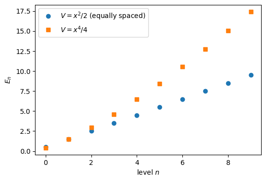
For the harmonic potential the levels are equally spaced (\(E_n = n + \tfrac12\)); for the steeper quartic potential the spacing grows with \(n\).
Shape operations are frequent in deep-learning code: a batch of images is flattened before a dense layer, a batch dimension is added to a single sample, the axes of an image are reordered for plotting, two tensors are joined along an axis. This section treats these operations one by one on small tensors whose entries are \(0, 1, 2, \dots\), so that the position of every number can be followed.
To make the result of each operation visible, a small helper draws a 2D tensor as a grid of coloured boxes. The colour of a box depends only on the number in it, so the same number has the same colour wherever it moves. The helper is only a plotting tool; its details are not needed for the rest of the section. For completeness: np.ndenumerate(a) yields every index (i, j) together with the value a[i, j]; the format :g prints integers without a decimal point; the colour of the text switches from white to black above 60 % of the colour scale (a cosmetic choice) so that it stays readable on the light end of the ‘viridis’ colour map; and vmax or a.max() evaluates to a.max() when vmax is None.
def show_grid(t, title="", ax=None, vmax=None):
"""Draw a 1D or 2D tensor as a grid of boxes with the values written in them."""
a = t.detach().numpy()
a = a.reshape(1, -1) if a.ndim == 1 else a
if ax is None:
fig, ax = plt.subplots(figsize=(0.6 * a.shape[1] + 0.6, 0.6 * a.shape[0] + 0.6))
ax.imshow(a, cmap="viridis", vmin=0, vmax=vmax if vmax is not None else a.max())
for (i, j), v in np.ndenumerate(a):
ax.text(j, i, f"{v:g}", ha="center", va="center", color="white" if v < 0.6 * (vmax or a.max()) else "black")
ax.set_xticks(range(a.shape[1])); ax.set_yticks(range(a.shape[0]))
ax.set_title(f"{title}\nshape {tuple(t.shape)}", fontsize=10)
return ax
x12 = torch.arange(12)
show_grid(x12, "x12 = torch.arange(12)")
plt.show()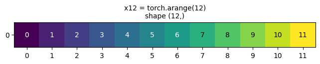
reshape and view: the same numbers, a different shapereshape(3, 4) arranges the 12 numbers into 3 rows of 4, filling row by row (the last index changes fastest). The total number of elements must not change; one dimension may be given as -1, meaning “whatever is needed”. view does the same, with one important difference: it never copies the numbers but returns a second way of reading the same memory (a view). Section 5.4 explains what this means and when view is not possible.
The last lines of the cell try an impossible shape (15 elements from 12) and use Python’s try/except: the code in the try block is run; if it raises an error of the named type (RuntimeError), the program does not stop, the except block runs instead and e holds the error message. This shows the error message without interrupting the notebook.
A = x12.reshape(3, 4)
B43 = x12.reshape(4, 3)
C = x12.view(2, -1) # -1 is computed: 12 / 2 = 6
fig, axes = plt.subplots(1, 3, figsize=(11, 3))
show_grid(A, "x12.reshape(3, 4)", axes[0], vmax=11)
show_grid(B43, "x12.reshape(4, 3)", axes[1], vmax=11)
show_grid(C, "x12.view(2, -1)", axes[2], vmax=11)
fig.tight_layout(); plt.show()
try:
x12.reshape(5, 3)
except RuntimeError as e:
print("RuntimeError:", e)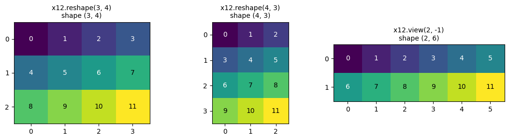
RuntimeError: shape '[5, 3]' is invalid for input of size 12In memory, the 12 numbers are always stored one after another in a single row. The shape only tells how to interpret this row. The strides say how many positions in memory one has to move to go to the next element along each dimension. For A = x12.reshape(3, 4) the strides are (4, 1): the next row starts 4 positions further, the next column 1 position further. The element A[i, j] is at memory position 4*i + 1*j. data_ptr() returns the memory address of the first element of a tensor; equal addresses mean that two tensors read the same memory.
print("A.shape :", tuple(A.shape))
print("A.stride():", A.stride())
i, j = 2, 1
print(f"A[{i}, {j}] = {A[i, j].item()}, memory position 4*{i} + 1*{j} = {4 * i + j}")
print("A and x12 share the same memory:", A.data_ptr() == x12.data_ptr())A.shape : (3, 4)
A.stride(): (4, 1)
A[2, 1] = 9, memory position 4*2 + 1*1 = 9
A and x12 share the same memory: TrueBecause reshape here only changes the interpretation, A and x12 are two views of the same memory: changing an element of one changes the other (as for NumPy views).
x2 = torch.arange(12)
A2 = x2.reshape(3, 4)
A2[0, 0] = 100
print("x2 after changing A2[0, 0]:", x2)x2 after changing A2[0, 0]: tensor([100, 1, 2, 3, 4, 5, 6, 7, 8, 9, 10, 11])transpose, .T and permute: reordering the axesA.T (for 2D tensors), A.transpose(0, 1) and A.permute(1, 0) swap the two axes: row \(i\), column \(j\) of the result is element \((j, i)\) of A. No number is moved in memory: only the strides are swapped. The result is therefore again a view of the same memory, but its elements are no longer stored row by row; such a tensor is called non-contiguous.
At = A.T
fig, axes = plt.subplots(1, 2, figsize=(7, 3.3))
show_grid(A, "A", axes[0], vmax=11)
show_grid(At, "A.T", axes[1], vmax=11)
fig.tight_layout(); plt.show()
print("A.stride() :", A.stride(), " contiguous:", A.is_contiguous())
print("A.T.stride():", At.stride(), " contiguous:", At.is_contiguous())
print("same memory :", At.data_ptr() == A.data_ptr())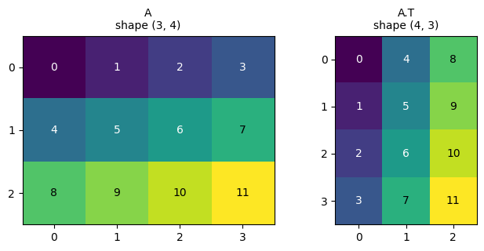
A.stride() : (4, 1) contiguous: True
A.T.stride(): (1, 4) contiguous: False
same memory : TrueFor tensors with more than two axes, permute takes the new order of all axes, and transpose(d1, d2) swaps two of them. Example: a tensor of shape (2, 3, 4); permute(2, 0, 1) puts the old axis 2 first, then old axis 0, then old axis 1, giving shape (4, 2, 3), and element [k, i, j] of the result is element [i, j, k] of the original.
T3 = torch.arange(24).reshape(2, 3, 4)
P = T3.permute(2, 0, 1)
print("T3 shape:", tuple(T3.shape), " P = T3.permute(2, 0, 1) shape:", tuple(P.shape))
print("T3[1, 2, 3] =", T3[1, 2, 3].item(), " P[3, 1, 2] =", P[3, 1, 2].item())
print("T3.transpose(0, 2) shape:", tuple(T3.transpose(0, 2).shape))T3 shape: (2, 3, 4) P = T3.permute(2, 0, 1) shape: (4, 2, 3)
T3[1, 2, 3] = 23 P[3, 1, 2] = 23
T3.transpose(0, 2) shape: (4, 3, 2)view in detail, and why it sometimes failsWhat a view is. t.view(shape) returns a new tensor object that uses the same memory as t. Only the description of how to read the memory (the shape and the strides) is new; not a single number is copied. Consequences: - creating a view is instantaneous, even for huge tensors; - changing an element through the view changes the original, and vice versa.
The cell below creates y = x12.view(3, 4) from the 12 numbers 0..11, compares the memory addresses (data_ptr()) of y and x12, and then changes one element of y to show that x12 changes too.
x12 = torch.arange(12) # 12 numbers stored one after another in memory
y = x12.view(3, 4) # the same memory, read as 3 rows of 4
print("y =\n", y)
print("strides of y:", y.stride(), "-> element y[i, j] is at memory position 4*i + j")
print("same memory as x12:", y.data_ptr() == x12.data_ptr())
y[1, 2] = -1 # change one element of the view ...
print("x12 after changing y[1, 2]:", x12) # ... and the original has changed: position 4*1 + 2 = 6y =
tensor([[ 0, 1, 2, 3],
[ 4, 5, 6, 7],
[ 8, 9, 10, 11]])
strides of y: (4, 1) -> element y[i, j] is at memory position 4*i + j
same memory as x12: True
x12 after changing y[1, 2]: tensor([ 0, 1, 2, 3, 4, 5, -1, 7, 8, 9, 10, 11])y[1, 2] is stored at memory position \(4\cdot1 + 2 = 6\), and indeed element 6 of x12 has become \(-1\): y and x12 are two ways of reading the same 12 numbers.
A common confusion: view(4, 3) is not the transpose. Both x.view(4, 3) and x.T (for x of shape (3, 4)) have shape (4, 3), but they are different tensors. view keeps the order of the numbers in memory and only cuts the row of 12 numbers into pieces of 3; the transpose turns rows into columns.
x34 = torch.arange(12).view(3, 4)
fig, axes = plt.subplots(1, 3, figsize=(10, 3.3))
show_grid(x34, "x34", axes[0], vmax=11)
show_grid(x34.view(4, 3), "x34.view(4, 3)", axes[1], vmax=11)
show_grid(x34.T, "x34.T", axes[2], vmax=11)
fig.tight_layout(); plt.show()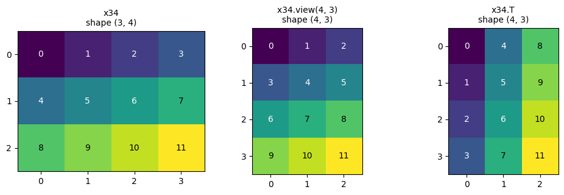
In x34.view(4, 3) the numbers keep their order \(0, 1, 2, \dots\) row by row (first row 0 1 2); in x34.T the first row is the first column of x34 (0 4 8). Using view (or reshape) where a transpose is meant is a frequent bug: the shapes are right, the numbers are in the wrong places, and no error is raised.
view after a transpose. A view must describe the requested shape with one stride per axis, i.e. along each axis the memory positions must be equally spaced. For x34.T (strides (1, 4)) this works. Now consider x34.T.view(-1), a flat tensor of 12 elements: reading x34.T row by row visits the memory positions shown below. They are not equally spaced (steps of \(+4, +4, -7, +4, \dots\)), so no single stride describes them, and view refuses. (Because x34 contains the numbers \(0, \dots, 11\) in memory order, every number is equal to its memory position; this makes the printed positions easy to compare with the values.)
Python details: [... for i in range(4) for j in range(3)] is a list comprehension with two loops, in which j runs fastest, i.e. the elements are visited row by row; .tolist() converts a tensor into a Python list (for a compact printout); np.diff(p) returns the differences p[1] - p[0], p[2] - p[1], ... of neighbouring elements.
xT = x34.T # shape (4, 3), strides (1, 4)
positions = [i * xT.stride(0) + j * xT.stride(1) for i in range(4) for j in range(3)] # memory position of xT[i, j]
print("strides of x34.T :", xT.stride())
print("x34.T read row by row :", xT.reshape(-1).tolist())
print("memory positions visited :", positions)
print("steps between them :", np.diff(positions).tolist())
# the same as a picture: the 12 memory cells in a row, numbered by the order in which x34.T reads them
fig, ax = plt.subplots(figsize=(10, 1.6))
# argsort returns the indices that would sort `positions`; since every memory cell occurs exactly once in `positions`,
# order[pos] is the step (0, 1, 2, ...) at which x34.T reads memory cell pos
order = np.argsort(positions)
for pos in range(12):
ax.add_patch(plt.Rectangle((pos, 0), 1, 1, fill=False))
ax.text(pos + 0.5, 0.62, f"{x34.reshape(-1)[pos].item()}", ha="center", fontsize=11) # the number stored there
ax.text(pos + 0.5, 0.2, f"#{order[pos] + 1}", ha="center", fontsize=9, color="C3") # when x34.T reads it
ax.set_xlim(0, 12); ax.set_ylim(0, 1); ax.axis("off")
ax.set_title("memory of x34 (black: stored number, red: position in the row-by-row reading order of x34.T)", fontsize=10)
plt.show()
try:
xT.view(-1)
except RuntimeError as e:
print("RuntimeError:", e)strides of x34.T : (1, 4)
x34.T read row by row : [0, 4, 8, 1, 5, 9, 2, 6, 10, 3, 7, 11]
memory positions visited : [0, 4, 8, 1, 5, 9, 2, 6, 10, 3, 7, 11]
steps between them : [4, 4, -7, 4, 4, -7, 4, 4, -7, 4, 4]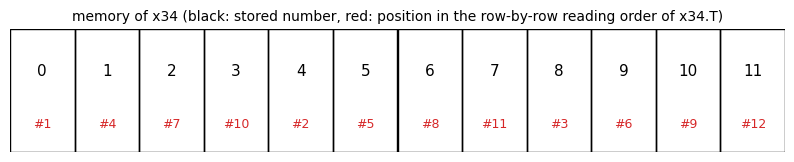
RuntimeError: view size is not compatible with input tensor's size and stride (at least one dimension spans across two contiguous subspaces). Use .reshape(...) instead.The red labels jump back and forth through memory, which is exactly what one stride cannot express. There are two ways out, both of which copy the data: - reshape(-1) returns a view when one is possible and otherwise silently makes a copy; - contiguous() makes the copy explicitly (the elements are written into new memory in row-by-row order), after which view works.
The cell checks that both give the numbers in the reading order of x34.T, and that the result no longer shares memory with x34.
flat1 = xT.reshape(-1)
flat2 = xT.contiguous().view(-1)
print("xT.reshape(-1) :", flat1.tolist())
print("xT.contiguous().view(-1):", flat2.tolist())
print("is xT contiguous? ", xT.is_contiguous(), " is xT.contiguous() contiguous?", xT.contiguous().is_contiguous())
print("reshape result shares memory with x34:", flat1.data_ptr() == x34.data_ptr(), " (a copy was made)")xT.reshape(-1) : [0, 4, 8, 1, 5, 9, 2, 6, 10, 3, 7, 11]
xT.contiguous().view(-1): [0, 4, 8, 1, 5, 9, 2, 6, 10, 3, 7, 11]
is xT contiguous? False is xT.contiguous() contiguous? True
reshape result shares memory with x34: False (a copy was made)Practical rule. Use reshape by default; it always works. Use view when sharing memory is intended (or to make sure no copy happens), and expect an error after transpose/permute. Remember that neither view nor reshape reorders the numbers: for a transpose use .T, transpose or permute.
unsqueeze, squeeze, NoneMany functions expect a particular number of axes. unsqueeze(d) inserts an axis of length 1 at position d; indexing with None does the same; squeeze(d) removes an axis of length 1. Typical uses: - a single sample of shape (n_in,) needs a batch axis to enter a layer: x.unsqueeze(0) has shape (1, n_in); - a network output of shape (B, 1) is turned into (B,) with squeeze(1); - a 1D grid of shape (N,) becomes a batch of 1D inputs (N, 1) with unsqueeze(1) or x[:, None].
The last lines of the cell use nn.Linear(4, 2), a dense layer mapping 4 inputs to 2 outputs. It is introduced in Section 6 and is used here only to show that a layer expects a batch axis.
v = torch.arange(4.0) # shape (4,)
print("v :", tuple(v.shape))
print("v.unsqueeze(0) :", tuple(v.unsqueeze(0).shape), " = v[None, :]", tuple(v[None, :].shape))
print("v.unsqueeze(1) :", tuple(v.unsqueeze(1).shape), " = v[:, None]", tuple(v[:, None].shape))
out = torch.zeros(5, 1)
print("out :", tuple(out.shape), " -> out.squeeze(1):", tuple(out.squeeze(1).shape))
print("squeeze() without argument removes ALL axes of length 1:", tuple(torch.zeros(1, 3, 1).squeeze().shape))
layer = nn.Linear(4, 2)
sample = torch.arange(4.0) # one sample, no batch axis
print("layer(sample.unsqueeze(0)).shape:", tuple(layer(sample.unsqueeze(0)).shape))v : (4,)
v.unsqueeze(0) : (1, 4) = v[None, :] (1, 4)
v.unsqueeze(1) : (4, 1) = v[:, None] (4, 1)
out : (5, 1) -> out.squeeze(1): (5,)
squeeze() without argument removes ALL axes of length 1: (3,)
layer(sample.unsqueeze(0)).shape: (1, 2)squeeze() without an argument is risky: for a batch of size 1 it also removes the batch axis. Giving the axis explicitly, squeeze(1), avoids this.
flatten and unflattenflatten(start_dim) merges all axes from start_dim on into one; unflatten(dim, sizes) splits one axis into several. For a batch of images of shape (B, 28, 28), flatten(1) keeps the batch axis and merges the pixels into (B, 784) (this is what nn.Flatten() does). The example images are random: torch.rand draws numbers uniformly from \([0, 1)\), like pixel intensities, whereas torch.randn draws from the standard normal distribution. torch.equal(a, b) is True only if the two tensors have the same shape and exactly the same elements.
images = torch.rand(16, 28, 28)
flat = images.flatten(1) # keep axis 0 (batch), merge the rest
print("images:", tuple(images.shape), " -> flatten(1):", tuple(flat.shape))
print("flatten() of everything:", tuple(images.flatten().shape))
back = flat.unflatten(1, (28, 28))
print("unflatten(1, (28, 28)):", tuple(back.shape), " identical to the original:", torch.equal(back, images))images: (16, 28, 28) -> flatten(1): (16, 784)
flatten() of everything: (12544,)
unflatten(1, (28, 28)): (16, 28, 28) identical to the original: True(B, C, H, W) and (B, H, W, C)A colour image is stored as three arrays of the same size, the channels: the intensities of red, green and blue (RGB) of every pixel, here numbers in \([0, 1]\). PyTorch stores a batch of colour images as (batch, channels, height, width); Matplotlib’s imshow expects one image as (height, width, channels). The conversion is a permute. Below, a batch of 2 synthetic RGB images of \(32\times48\) pixels: in the first one the red channel grows from left to right and the blue channel from top to bottom; the second image is 1 - img, whose green channel equals 1 everywhere. Two operations explained in the next sections are used to build them: expand (5.9) repeats a row or column to fill the \(H\times W\) array, and stack (5.8) joins the three channels along a new first axis.
H, W = 32, 48
red = torch.linspace(0, 1, W).expand(H, W) # grows along the width
blue = torch.linspace(0, 1, H)[:, None].expand(H, W) # grows along the height
green = torch.zeros(H, W)
img = torch.stack([red, green, blue]) # shape (3, H, W): channels first
img_batch = torch.stack([img, 1 - img]) # shape (2, 3, H, W): a batch of 2 images
print("img_batch:", tuple(img_batch.shape), "(B, C, H, W)")
fig, axes = plt.subplots(1, 2, figsize=(8, 3))
for k, ax in enumerate(axes):
ax.imshow(img_batch[k].permute(1, 2, 0)) # (C, H, W) -> (H, W, C) for imshow
ax.set_title(f"image {k}: img_batch[{k}].permute(1, 2, 0)\nshape {tuple(img_batch[k].permute(1, 2, 0).shape)}", fontsize=9)
fig.tight_layout(); plt.show()img_batch: (2, 3, 32, 48) (B, C, H, W)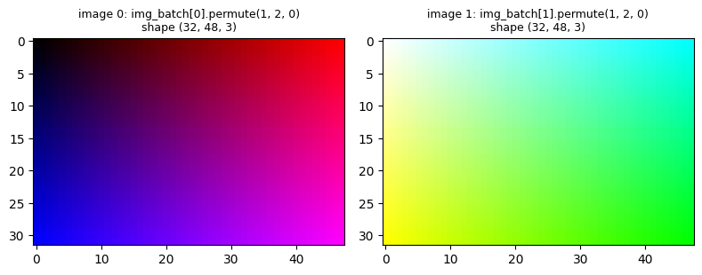
cat and stacktorch.cat([a, b], dim=d) joins tensors along an existing axis; all other axes must agree.torch.stack([a, b], dim=d) creates a new axis at position d; the tensors must have identical shapes.a = torch.arange(6).reshape(2, 3)
b = 10 + torch.arange(6).reshape(2, 3)
fig, axes = plt.subplots(1, 4, figsize=(15, 3.2))
show_grid(a, "a", axes[0], vmax=15); show_grid(b, "b", axes[1], vmax=15)
show_grid(torch.cat([a, b], dim=0), "torch.cat([a, b], dim=0)", axes[2], vmax=15)
show_grid(torch.cat([a, b], dim=1), "torch.cat([a, b], dim=1)", axes[3], vmax=15)
fig.tight_layout(); plt.show()
print("torch.stack([a, b], dim=0).shape:", tuple(torch.stack([a, b], dim=0).shape))
print("torch.stack([a, b], dim=2).shape:", tuple(torch.stack([a, b], dim=2).shape))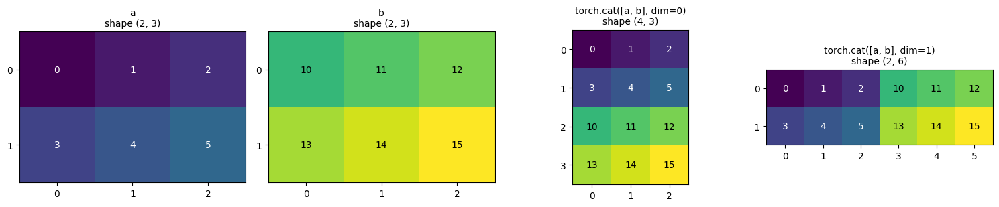
torch.stack([a, b], dim=0).shape: (2, 2, 3)
torch.stack([a, b], dim=2).shape: (2, 3, 2)expand, repeat and broadcastingexpand repeats a tensor along axes of length 1 without copying (it sets the stride of these axes to 0); it can also add new axes in front, e.g. a vector of shape (W,) expanded to (H, W). repeat makes real copies. In arithmetic, broadcasting performs the expansion automatically. A typical use: all pairwise differences of \(N\) points in 2D. The points (N, 2) are turned into (N, 1, 2) and (1, N, 2); their difference broadcasts to (N, N, 2), with element diff[i, j] equal to the vector \(\mathbf p_i - \mathbf p_j\). diff.norm(dim=2) computes the length \(\sqrt{d_x^2 + d_y^2}\) of every such vector, i.e. along the last axis, so that dist[i, j] is the distance between points \(i\) and \(j\).
row = torch.arange(3).reshape(1, 3)
e = row.expand(4, 3)
r = row.repeat(4, 1)
print("expand:", tuple(e.shape), "strides", e.stride(), " shares memory:", e.data_ptr() == row.data_ptr())
print("repeat:", tuple(r.shape), "strides", r.stride(), " shares memory:", r.data_ptr() == row.data_ptr())
pts = torch.tensor([[0.0, 0.0], [3.0, 0.0], [0.0, 4.0]]) # N = 3 points: a 3-4-5 right triangle, so the
# distances are integers and easy to check
diff = pts.unsqueeze(1) - pts.unsqueeze(0) # (3, 1, 2) - (1, 3, 2) -> (3, 3, 2)
dist = diff.norm(dim=2) # length along the last axis -> (3, 3)
print("pairwise distances:\n", dist)expand: (4, 3) strides (0, 1) shares memory: True
repeat: (4, 3) strides (3, 1) shares memory: False
pairwise distances:
tensor([[0., 3., 4.],
[3., 0., 5.],
[4., 5., 0.]])The operator @ works on batches: for M of shape (B, n, m) and N of shape (B, m, k) it computes B matrix products at once, giving (B, n, k). A batch of vectors (B, m) is multiplied by a batch of matrices (B, n, m) after adding an axis: v.unsqueeze(2) of shape (B, m, 1) is a batch of column vectors, i.e. of \(m\times1\) matrices, M @ v.unsqueeze(2) has shape (B, n, 1), and (M @ v.unsqueeze(2)).squeeze(2) removes the column axis again, giving (B, n).
torch.manual_seed(0)
M = torch.randn(5, 3, 4) # 5 matrices of shape 3 x 4
Nm = torch.randn(5, 4, 2) # 5 matrices of shape 4 x 2
v_batch = torch.randn(5, 4) # 5 vectors of length 4
print("M @ Nm :", tuple((M @ Nm).shape))
print("(M @ v_batch.unsqueeze(2)).squeeze(2):", tuple((M @ v_batch.unsqueeze(2)).squeeze(2).shape))M @ Nm : (5, 3, 2)
(M @ v_batch.unsqueeze(2)).squeeze(2): (5, 3)Tensors as arrays with indices. In this course a tensor is an array of numbers whose elements are labelled by indices: a scalar \(s\) has no index, a vector \(v_i\) one, a matrix \(A_{ij}\) two, a three-index array \(T_{ijk}\) three. Each index runs over one axis of the array; the range of an index is the length of that axis. A PyTorch tensor of shape (2, 3, 4) is \(T_{ijk}\) with \(i = 1..2\), \(j = 1..3\), \(k = 1..4\); in PyTorch the same indices run from 0, i.e. T[0..1, 0..2, 0..3]. The number of indices is called the rank (or order) of the tensor; this is not the rank of a matrix in linear algebra. In PyTorch it is t.ndim.
Vector times vector: the inner (scalar) product. For two vectors \(u\) and \(v\) of the same length \(m\), \[s = \sum_{i=1}^{m} u_i\, v_i, \qquad (m)\cdot(m) \;\to\; \text{a scalar}.\] The two vectors share the index \(i\), which is summed: nothing is left, and the result is a single number. Both vectors must have the same length, because they share the index. This is the simplest contraction, and the two products below are built from it.
Matrix times vector. For a matrix \(A\) of shape \(n\times m\) and a vector \(v\) of length \(m\), \[w_i = \sum_{j=1}^{m} A_{ij}\, v_j, \qquad i = 1, \dots, n .\] Element \(w_i\) is the scalar product of row \(i\) of \(A\) with \(v\). The summed index \(j\) belongs to both factors and must therefore have the same range in both: the number of columns of \(A\) must equal the length of \(v\). The result keeps the free index \(i\): \[(n\times m)\cdot(m) \;\to\; (n).\]
Matrix times matrix. For \(A\) of shape \(n\times m\) and \(B\) of shape \(m\times p\), \[C_{ik} = \sum_{j=1}^{m} A_{ij}\, B_{jk}, \qquad (n\times m)\cdot(m\times p) \;\to\; (n\times p).\] Element \(C_{ik}\) is the scalar product of row \(i\) of \(A\) with column \(k\) of \(B\). The “inner” dimensions (both \(m\)) are summed and disappear; the “outer” ones (\(n\) and \(p\)) remain. The matrices need not be square: only the summed index must match. In general \(AB \neq BA\), even for square matrices; for rectangular matrices \(BA\) may not even be defined (it requires \(p = n\)).
The opposite case: the outer product. If no index is summed, two vectors give a matrix, \(M_{ij} = u_i v_j\), of shape \((n)\cdot(m) \to (n\times m)\), and the vectors may have different lengths.
torch.manual_seed(0)
u, w = torch.randn(3), torch.randn(3)
print("inner product u.w: torch.dot", round(torch.dot(u, w).item(), 5), "| u @ w", round((u @ w).item(), 5),
"| sum_i u_i w_i", round((u * w).sum().item(), 5), "| einsum", round(torch.einsum("i,i->", u, w).item(), 5))
print("outer product shape:", tuple(torch.outer(u, torch.randn(5)).shape), " (vectors of lengths 3 and 5)")
A23 = torch.randn(2, 3) # n x m = 2 x 3 (rectangular)
v3 = torch.randn(3) # length m = 3
B34 = torch.randn(3, 4) # m x p = 3 x 4
print("A23 @ v3 :", tuple(A23.shape), "x", tuple(v3.shape), "->", tuple((A23 @ v3).shape))
print("A23 @ B34 :", tuple(A23.shape), "x", tuple(B34.shape), "->", tuple((A23 @ B34).shape))
# PyTorch counts indices from 0: element 0 of the result is the formula's w_1
print("first element by the formula, sum_j A_0j v_j =", (A23[0] * v3).sum().item(), " (A23 @ v3)[0] =", (A23 @ v3)[0].item())
try:
B34 @ A23 # (3 x 4) x (2 x 3): the inner dimensions 4 and 2 differ
except RuntimeError as e:
print("B34 @ A23 fails:", e)
print("A23 @ A23.T :", tuple((A23 @ A23.T).shape), " A23.T @ A23 :", tuple((A23.T @ A23).shape), " <- both defined, different shapes")inner product u.w: torch.dot 4.24143 | u @ w 4.24143 | sum_i u_i w_i 4.24143 | einsum 4.24143
outer product shape: (3, 5) (vectors of lengths 3 and 5)
A23 @ v3 : (2, 3) x (3,) -> (2,)
A23 @ B34 : (2, 3) x (3, 4) -> (2, 4)
first element by the formula, sum_j A_0j v_j = -0.8288600444793701 (A23 @ v3)[0] = -0.8288600444793701
B34 @ A23 fails: mat1 and mat2 shapes cannot be multiplied (3x4 and 2x3)
A23 @ A23.T : (2, 2) A23.T @ A23 : (3, 3) <- both defined, different shapesTensor contraction. The matrix-vector and matrix-matrix products are the simplest examples of one general operation. A contraction sums over a pair of indices with the same range: one index from each of two tensors (as \(j\) above), or two indices of the same tensor (as in the trace \(\sum_i A_{ii}\)). Each contracted pair removes two indices, so \[\text{rank of the result} = \text{sum of the ranks of the factors} - 2\times(\text{number of contracted pairs}).\] This rule holds when every index either appears once (a free index) or appears exactly twice and is summed. An index that is shared but not summed (a batch index, or an element-wise product, see 5.12) lowers the rank by one instead of two. Inner product: \(1 + 1 - 2 = 0\) (a scalar). Matrix times vector: \(2 + 1 - 2 = 1\). Matrix times matrix: \(2 + 2 - 2 = 2\). Outer product: \(1 + 1 - 0 = 2\). With more indices the same operation reads, for example, \[C_{il} = \sum_{j}\sum_{k} T_{ijk}\, S_{jkl}, \qquad (n\times m\times r)\cdot(m\times r\times p)\;\to\;(n\times p),\qquad \text{rank } 3 + 3 - 4 = 2 ,\] two pairs of indices (\(j\) and \(k\)) being contracted at once. Contractions of this kind are common in physics: \(\langle\psi|H|\psi\rangle = \sum_{ij}\psi_i^* H_{ij}\psi_j\), the stress tensor acting on a normal vector, tensor-network states of quantum many-body systems.
The Einstein summation convention. Because sums over repeated indices are so frequent, Einstein proposed to omit the summation sign: an index that appears twice in a product is summed. The formulas above become \[w_i = A_{ij}v_j, \qquad C_{ik} = A_{ij}B_{jk}, \qquad s = u_iv_i, \qquad C_{il} = T_{ijk}S_{jkl} .\] Indices that appear once (here \(i\), \(k\), \(l\)) are free: they label the elements of the result.
einsum: the summation convention in codetorch.einsum takes such a formula as a string. For \(C_{ik} = A_{ij}B_{jk}\) one writes
C = torch.einsum("ij,jk->ik", A, B)Reading the string. 1. Left of ->: one group of letters per input tensor, separated by commas, one letter per axis. "ij,jk" says: the first tensor has two axes called i and j, the second two axes called j and k. The number of letters must equal the number of axes of the tensor. 2. The same letter in different inputs means that these axes are the same index: they must have equal lengths, and the elements are multiplied with matching values of this index. 3. Right of ->: the free indices of the result, in this order. Every letter that appears on the left but not on the right is summed over. Unlike in the pure Einstein convention, the output is written explicitly; this also allows keeping a repeated index (no sum) or choosing the order of the axes.
In words, "ij,jk->ik": for every pair \((i, k)\), multiply \(A_{ij}B_{jk}\) and sum over \(j\), because \(j\) does not appear in the output.
The rules can be checked by writing the same computation with explicit loops: one loop per letter, the product of the indexed elements in the innermost loop, and accumulation into the output elements labelled by the letters after ->. The comparisons use torch.allclose(a, b), which checks equality up to the rounding errors of floating-point arithmetic: element by element it tests \(|a - b| \le \text{atol} + \text{rtol}\,|b|\), with defaults \(\text{atol} = 10^{-8}\) and \(\text{rtol} = 10^{-5}\). In float32 a sum computed in a different order (loops, @, einsum) differs in the last digits, i.e. by about \(10^{-7}\) times the size of the terms. For elements that happen to be close to zero the relative part \(\text{rtol}\,|b|\) is then tiny and the default \(\text{atol}\) can be too strict, so several later cells set atol=1e-6 (or 1e-5 for larger sums) as a safeguard against such false alarms.
torch.manual_seed(1)
a = torch.randn(2, 3) # axes i (length 2), j (length 3)
b = torch.randn(3, 4) # axes j (length 3), k (length 4)
# einsum
c_einsum = torch.einsum("ij,jk->ik", a, b)
# the same with explicit loops: one loop per letter, sum over j because j is missing after '->'
c_loops = torch.zeros(2, 4)
for i in range(2):
for k in range(4):
for j in range(3):
c_loops[i, k] += a[i, j] * b[j, k]
print("einsum == loops :", torch.allclose(c_einsum, c_loops))
print("einsum == a @ b :", torch.allclose(c_einsum, a @ b))einsum == loops : True
einsum == a @ b : TrueThe basic operations, one by one. For each string the cell below compares einsum with the familiar PyTorch function; the table gives the formula. Each string can be read with the three rules above. In the code, checks is a list of triples (name, result of einsum, result of the standard function), and for name, with_einsum, reference in checks unpacks every triple into three variables.
| string | formula | meaning |
|---|---|---|
"i,i->" |
\(\sum_i u_i v_i\) | scalar product (i is summed, nothing is left: a number) |
"i,j->ij" |
\(u_i v_j\) | outer product (nothing summed) |
"i,i->i" |
\(u_i v_i\) | element-wise product (i kept in the output, so not summed) |
"ij,j->i" |
\(\sum_j A_{ij} v_j\) | matrix times vector |
"ij,jk->ik" |
\(\sum_j A_{ij} B_{jk}\) | matrix times matrix |
"ij->ji" |
\(A_{ji}\) | transpose (only the order of the output letters changes) |
"ii->" |
\(\sum_i A_{ii}\) | trace (a repeated letter in one input selects the diagonal) |
"ii->i" |
\(A_{ii}\) | diagonal |
"ij->i" |
\(\sum_j A_{ij}\) | sum over the second axis (row sums) |
"ij,ij->" |
\(\sum_{ij} A_{ij}B_{ij}\) | Frobenius scalar product of two matrices |
torch.manual_seed(2)
u, w = torch.randn(4), torch.randn(4)
Asq, Bm = torch.randn(4, 4), torch.randn(4, 3)
checks = [
("i,i-> scalar product ", torch.einsum("i,i->", u, w), torch.dot(u, w)),
("i,j->ij outer product ", torch.einsum("i,j->ij", u, w), torch.outer(u, w)),
("i,i->i element-wise ", torch.einsum("i,i->i", u, w), u * w),
("ij,j->i matrix-vector ", torch.einsum("ij,j->i", Asq, u), Asq @ u),
("ij,jk->ik matrix-matrix ", torch.einsum("ij,jk->ik", Asq, Bm), Asq @ Bm),
("ij->ji transpose ", torch.einsum("ij->ji", Asq), Asq.T),
("ii-> trace ", torch.einsum("ii->", Asq), torch.trace(Asq)),
("ii->i diagonal ", torch.einsum("ii->i", Asq), torch.diagonal(Asq)),
("ij->i row sums ", torch.einsum("ij->i", Asq), Asq.sum(dim=1)),
("ij,ij-> Frobenius ", torch.einsum("ij,ij->", Asq, Asq), (Asq * Asq).sum()),
]
for name, with_einsum, reference in checks:
print(f"{name}: result shape {str(tuple(with_einsum.shape)):8s} agrees: {torch.allclose(with_einsum, reference)}")i,i-> scalar product : result shape () agrees: True
i,j->ij outer product : result shape (4, 4) agrees: True
i,i->i element-wise : result shape (4,) agrees: True
ij,j->i matrix-vector : result shape (4,) agrees: True
ij,jk->ik matrix-matrix : result shape (4, 3) agrees: True
ij->ji transpose : result shape (4, 4) agrees: True
ii-> trace : result shape () agrees: True
ii->i diagonal : result shape (4,) agrees: True
ij->i row sums : result shape (4,) agrees: True
ij,ij-> Frobenius : result shape () agrees: TrueBatch axes. A letter that appears in the output is never summed. If it appears in several inputs, their elements are multiplied with matching values of this index; such an index labels independent copies of the same operation (a batch index). "bij,bjk->bik" is a matrix product for every b separately. In "bi,ij->bj" the letter b belongs to the first input only: the same matrix is applied to every vector of the batch.
torch.manual_seed(3)
Mb = torch.randn(5, 3, 4) # b, i, j
Nb = torch.randn(5, 4, 2) # b, j, k
X = torch.randn(5, 4) # b, i : a batch of 5 vectors of length 4
W = torch.randn(4, 6) # i, j : one matrix for all of them
print("bij,bjk->bik :", torch.allclose(torch.einsum("bij,bjk->bik", Mb, Nb), Mb @ Nb))
print("bi,ij->bj :", torch.allclose(torch.einsum("bi,ij->bj", X, W), X @ W))
print("bi,bi->b :", torch.allclose(torch.einsum("bi,bi->b", X, X), (X * X).sum(dim=1)), " (one scalar product per batch element)")bij,bjk->bik : True
bi,ij->bj : True
bi,bi->b : True (one scalar product per batch element)General tensor contractions. With more axes, the same three rules apply. In "ijk,jkl->il" the letters j and k appear in both inputs and not in the output, so both are summed: \(C_{il} = \sum_{j,k} T_{ijk} S_{jkl}\). Without einsum this needs a reshape that merges the two contracted axes into one, followed by a matrix product.
torch.manual_seed(4)
T = torch.randn(2, 3, 4) # i, j, k
S = torch.randn(3, 4, 5) # j, k, l
C_einsum = torch.einsum("ijk,jkl->il", T, S)
C_reshape = T.reshape(2, 12) @ S.reshape(12, 5) # merge (j, k) into one axis of length 12 on both sides
C_loops = torch.zeros(2, 5)
for i in range(2):
for l in range(5):
for j in range(3):
for k in range(4):
C_loops[i, l] += T[i, j, k] * S[j, k, l]
print("shape:", tuple(C_einsum.shape))
print("einsum == reshape + @ :", torch.allclose(C_einsum, C_reshape, atol=1e-6))
print("einsum == loops :", torch.allclose(C_einsum, C_loops, atol=1e-6))shape: (2, 5)
einsum == reshape + @ : True
einsum == loops : TrueA physics example: expectation values. For a state vector \(\psi\) (normalised, real here for simplicity) and a Hamiltonian matrix \(H\), \(\langle\psi|H|\psi\rangle = \sum_{ij}\psi_i H_{ij}\psi_j\) is "i,ij,j->": three inputs, all letters summed. For a batch of states \(\psi_{bi}\) the batch letter is kept: "bi,ij,bj->b" gives one expectation value per state. We use the grid Hamiltonian of the harmonic oscillator from Section 4 and its first three eigenstates, whose energies are \(\approx 0.5, 1.5, 2.5\). Since \(H\psi_b = E_b\psi_b\) and eigh returns vectors normalised as \(\sum_i \psi_i^2 = 1\), the expectation values must equal the eigenvalues. eigh returns the eigenvectors as the columns of psi_ho, so psi_ho[:, :3] holds the three lowest states as columns and the transpose .T puts them into rows, one state per value of b.
x_grid = torch.linspace(-6, 6, 400, dtype=torch.float64)
H_ho = hamiltonian_torch(x_grid, 0.5 * x_grid**2) # Section 4
E_ho, psi_ho = torch.linalg.eigh(H_ho)
states = psi_ho[:, :3].T # three eigenstates as rows: shape (3, 400), axes b, i
single = torch.einsum("i,ij,j->", states[0], H_ho, states[0]) # one state
E_batch = torch.einsum("bi,ij,bj->b", states, H_ho, states) # three states at once
print("<psi_0|H|psi_0> :", round(single.item(), 4))
print("<psi_b|H|psi_b>, b=0,1,2:", E_batch.numpy().round(4))
print("eigenvalues from eigh :", E_ho[:3].numpy().round(4))<psi_0|H|psi_0> : 0.5
<psi_b|H|psi_b>, b=0,1,2: [0.5 1.4999 2.4996]
eigenvalues from eigh : [0.5 1.4999 2.4996]Strings for tensors whose shape is not known in advance. An einsum string never contains the lengths of the axes: "ij,jk->ik" works for matrices of any sizes \(n\times m\) and \(m\times p\). What a string fixes is the number of axes of every input. Two tools handle the case where even this is not known beforehand.
1. The ellipsis ... stands for “any number of axes here, possibly none”. The letters then describe only the axes that take part in the operation, and all other axes are carried along unchanged. Examples: - "...i,ji->...j": apply a matrix \(W_{ji}\) to the last axis of a tensor of any rank, e.g. shapes (4,), (B, 4) or (B, T, 4). This is what nn.Linear does with its input (apart from adding the bias); - "...ij,...jk->...ik": matrix products with any number of batch axes in front; - "...ii->...": the trace over the last two axes, whatever comes before them.
The comparisons in the cell address axes with negative numbers, which count from the end: \(-1\) is the last axis, \(-2\) the one before it. This addresses the last axes independently of how many axes stand in front of them, the same idea as .... Sq.diagonal(dim1=-2, dim2=-1) takes the diagonals of the matrices formed by the last two axes, and .sum(-1) sums over the last axis. (In reshape and view, by contrast, \(-1\) means “size to be computed”.)
torch.manual_seed(6)
W = torch.randn(3, 4) # maps the last axis from length 4 to length 3
for shape in [(4,), (5, 4), (2, 5, 4)]: # tensors of rank 1, 2 and 3
X = torch.randn(shape)
out = torch.einsum("...i,ji->...j", X, W) # one string for all ranks
print(f"input {str(shape):10s} -> output {str(tuple(out.shape)):10s} same as X @ W.T: {torch.allclose(out, X @ W.T, atol=1e-6)}")
Mb = torch.randn(2, 6, 3, 4); Nb = torch.randn(2, 6, 4, 5) # two batch axes in front
print("...ij,...jk->...ik :", tuple(torch.einsum("...ij,...jk->...ik", Mb, Nb).shape),
" same as @:", torch.allclose(torch.einsum("...ij,...jk->...ik", Mb, Nb), Mb @ Nb, atol=1e-6))
Sq = torch.randn(2, 6, 3, 3)
print("...ii->... :", tuple(torch.einsum("...ii->...", Sq).shape),
" same as traces:", torch.allclose(torch.einsum("...ii->...", Sq), Sq.diagonal(dim1=-2, dim2=-1).sum(-1)))input (4,) -> output (3,) same as X @ W.T: True
input (5, 4) -> output (5, 3) same as X @ W.T: True
input (2, 5, 4) -> output (2, 5, 3) same as X @ W.T: True
...ij,...jk->...ik : (2, 6, 3, 5) same as @: True
...ii->... : (2, 6) same as traces: True2. Building the string in code. Sometimes the axis that takes part in the contraction is only known when the program runs, e.g. “apply the matrix \(M\) to axis \(k\) of a tensor \(T\) with \(N\) axes”, where \(N\) and \(k\) are variables. The string is then assembled from letters: one letter per axis of \(T\), the letter of axis \(k\) is shared with \(M\), and in the output it is replaced by a new letter: \[T'_{a_1 \dots a_{k-1}\, b\, a_{k+1} \dots a_N} = \sum_{a_k} M_{b\, a_k}\, T_{a_1 \dots a_k \dots a_N}.\] This operation appears, for example, when an operator acts on one index of a many-index object (in quantum mechanics: a one-qubit gate acting on the state of \(N\) qubits, stored as a tensor with \(N\) axes of length 2).
Python details of the cell: the module string provides string.ascii_lowercase, the string 'abcdefghijklmnopqrstuvwxyz'; a string is sliced like a list (letters[:4] is 'abcd'); f"..." inserts the values of the expressions in braces; and a function can return several values separated by commas, which the caller unpacks into several variables (out, spec = ...).
import string
def apply_along_axis(M, T, k):
"""Contract the matrix M (shape (n_out, n_k)) with axis k of the tensor T; the new axis stays at position k."""
letters = string.ascii_lowercase # 'abcdefghijklmnopqrstuvwxyz'
t_idx = letters[:T.ndim] # one letter per axis of T, e.g. 'abcd'
new = letters[T.ndim] # an unused letter for the output axis
out_idx = t_idx[:k] + new + t_idx[k + 1:] # axis k replaced by the new letter
spec = f"{new}{t_idx[k]},{t_idx}->{out_idx}" # e.g. 'ec,abcd->abed' for k = 2
return torch.einsum(spec, M, T), spec
torch.manual_seed(7)
T = torch.randn(2, 3, 4, 5) # N = 4 axes
M = torch.randn(6, 4) # acts on an axis of length 4
out, spec = apply_along_axis(M, T, k=2)
# check: move axis k to the end, multiply with M^T, move the new axis back to position k
reference = (T.movedim(2, -1) @ M.T).movedim(-1, 2)
print("generated string:", spec)
print("result shape :", tuple(out.shape), " same as movedim + @:", torch.allclose(out, reference, atol=1e-6))generated string: ec,abcd->abed
result shape : (2, 3, 6, 5) same as movedim + @: Truemovedim(source, destination) moves one axis to another position (a permute that changes only one axis). The same contraction can also be done with torch.tensordot(M, T, dims=([1], [k])), which contracts axis 1 of M with axis k of T and puts the remaining axes of M first; einsum has the advantage that the order of the output axes is written explicitly.
Summary of the rules. One letter per axis; equal letters are the same index; letters missing after -> are summed; letters kept after -> are not summed (if they appear in several inputs they act as batch indices); the order of the letters after -> is the order of the output axes. ... stands for any number of further axes, so that one string works for tensors of different rank; strings can also be assembled in code. When an operation has a standard function (@, .T, sum), that function is usually at least as fast; einsum is most useful when several axes are contracted at once or when the index notation makes the code easier to compare with a formula.
| operation | what it does | copies data? | typical use |
|---|---|---|---|
reshape(shape) |
new shape, same order of elements | only if necessary | general reshaping |
view(shape) |
new shape, same order of elements | never (error if impossible) | reshaping when a view is required |
.T, transpose(d1, d2) |
swaps two axes | no (non-contiguous result) | matrix transpose |
permute(order) |
reorders all axes | no (non-contiguous result) | (B, C, H, W) \(\leftrightarrow\) (B, H, W, C) |
contiguous() |
stores the elements row by row | yes, if non-contiguous | before view |
unsqueeze(d), x[:, None] |
inserts an axis of length 1 | no | adding a batch or feature axis |
squeeze(d) |
removes an axis of length 1 | no | (B, 1) \(\to\) (B,) |
flatten(d), unflatten(d, sizes) |
merges / splits axes | as reshape |
images \(\to\) vectors for dense layers |
cat(list, dim) |
joins along an existing axis | yes | concatenating batches or features |
stack(list, dim) |
joins along a new axis | yes | building a batch from samples |
expand(shape) |
repeats along axes of length 1 | no | explicit broadcasting |
repeat(counts) |
repeats along any axes | yes | tiling |
einsum(string, ...) |
products and sums written in index notation (... = any further axes) |
usually; pure reorderings and diagonals return views | contractions over several axes, batched products |
nn.Linear and activation functionsnn.Linear(n_in, n_out) is the dense (fully connected) layer \(\mathbf z \mapsto \mathbf W\mathbf z + \mathbf b\). It creates and randomly initialises its own parameters weight (shape (n_out, n_in)) and bias (shape (n_out,)): by default all of them are drawn uniformly from \([-1/\sqrt{n_{\rm in}},\, 1/\sqrt{n_{\rm in}}]\). The factor \(1/\sqrt{n_{\rm in}}\) keeps the outputs of the layer of order one, independently of the number of inputs (the reason is given in Section 7). Input: a batch of shape (B, n_in); output: (B, n_out).
In the printout, .data gives the bare numbers of a parameter without its gradient bookkeeping; it is used here only for a shorter printout. In computations .data should be avoided, because changes made through it are invisible to autograd; the safe alternatives are .detach() and torch.no_grad().
torch.manual_seed(0)
layer = nn.Linear(in_features=3, out_features=2)
print(layer)
print("weight:", layer.weight.shape, "\n", layer.weight.data)
print("weight.requires_grad:", layer.weight.requires_grad)
print("bias :", layer.bias.shape, layer.bias.data)
Z = torch.randn(5, 3) # batch of 5 inputs with 3 features each
out = layer(Z) # calling the layer = forward pass
print("output shape:", out.shape)
# check: it is really Z @ W^T + b
print("same as manual:", torch.allclose(out, Z @ layer.weight.T + layer.bias))Linear(in_features=3, out_features=2, bias=True)
weight: torch.Size([2, 3])
tensor([[-0.0043, 0.3097, -0.4752],
[-0.4249, -0.2224, 0.1548]])
weight.requires_grad: True
bias : torch.Size([2]) tensor([-0.0114, 0.4578])
output shape: torch.Size([5, 2])
same as manual: Truelayer.weight.requires_grad is True: these are trainable parameters, and PyTorch will compute gradients with respect to them.
Activation functions exist both as layers (nn.Tanh(), nn.ReLU(), …) and as functions (torch.tanh, torch.relu, …). The six plotted below are (in the plots, \(\sigma\) denotes a generic activation function)
| name | formula |
|---|---|
| Sigmoid | \(1/(1 + e^{-z})\) |
| Tanh | \(\tanh z\) |
| ReLU | \(\max(0, z)\) |
| LeakyReLU(\(\alpha\)) | \(z\) for \(z \ge 0\), \(\alpha z\) for \(z < 0\); the slope \(\alpha\) is a free choice (0.01 is PyTorch’s default, 0.1 is used here to make it visible) |
| GELU | \(z\,\Phi(z)\), with \(\Phi\) the cumulative distribution function of the standard normal distribution |
| Softplus | \(\ln(1 + e^{z})\), a smooth version of ReLU |
In the code, acts is a dictionary (name \(\to\) layer); acts.items() yields the pairs (name, layer). axes.flatten() turns the \(2\times3\) array of subplots into a list of 6, and zip walks through the two sequences in parallel. The range \([-4, 4]\) covers the region where the functions bend; 300 points are only needed for smooth curves.
z = torch.linspace(-4, 4, 300)
acts = {"Sigmoid": nn.Sigmoid(), "Tanh": nn.Tanh(), "ReLU": nn.ReLU(),
"LeakyReLU(0.1)": nn.LeakyReLU(0.1), "GELU": nn.GELU(), "Softplus": nn.Softplus()}
fig, axes = plt.subplots(2, 3, figsize=(12, 6), sharex=True)
for ax, (name, act) in zip(axes.flatten(), acts.items()):
ax.plot(z, act(z), lw=2)
ax.axhline(0, color="gray", lw=0.5); ax.axvline(0, color="gray", lw=0.5)
ax.set_title(name); ax.set_xlabel("$z$"); ax.set_ylabel(r"$\sigma(z)$")
fig.tight_layout(); plt.show()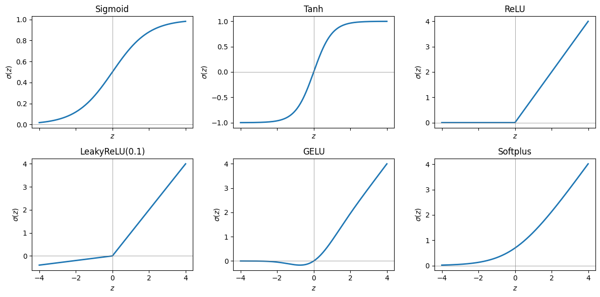
nn.Sequential: stacking layersThe single-hidden-layer network \(f(x) = \sum_{i=1}^{N} W^{(2)}_i\,\sigma(W^{(1)}_i x + b_i) + b^{(2)}\), with \(\sigma = \tanh\), is Linear(1, N) → Tanh → Linear(N, 1). By the Universal Approximation Theorem (see the lecture), such a network can approximate any continuous function on an interval when \(N\) is large enough. The width \(N = 16\) is arbitrary.
The parameter count is \(3N + 1\): the first layer has \(N\) weights and \(N\) biases, the second \(N\) weights and 1 bias. In the code, model.parameters() yields the trainable tensors of the model one after another, named_parameters() yields them together with their names, and p.numel() is the number of elements of a tensor. sum(p.numel() for p in model.parameters()) adds up p.numel() for every parameter tensor without first building a list.
torch.manual_seed(1)
N = 16
model = nn.Sequential(
nn.Linear(1, N), # W^(1), b : x -> N hidden pre-activations
nn.Tanh(), # sigma, element-wise
nn.Linear(N, 1), # W^(2), b^(2) : N hidden activations -> 1 output
)
print(model)
n_params = sum(p.numel() for p in model.parameters())
print("number of trainable parameters:", n_params, "= 3N + 1 =", 3 * N + 1)
for name, p in model.named_parameters():
print(f" {name:10s} {tuple(p.shape)}")Sequential(
(0): Linear(in_features=1, out_features=16, bias=True)
(1): Tanh()
(2): Linear(in_features=16, out_features=1, bias=True)
)
number of trainable parameters: 49 = 3N + 1 = 49
0.weight (16, 1)
0.bias (16,)
2.weight (1, 16)
2.bias (1,)The untrained network evaluated on a grid of 400 inputs (a batch of shape (400, 1); range and number of points are arbitrary choices for the plot).
A with block switches a setting on for the indented lines only and restores it afterwards. Inside with torch.no_grad(): PyTorch does not record the operations needed to compute gradients, which saves memory and time when a network is only evaluated.
x = torch.linspace(-3, 3, 400)[:, None] # shape (400, 1): batch of 1D inputs
with torch.no_grad(): # we only evaluate; no gradients needed
y = model(x)
fig, ax = plt.subplots(figsize=(6, 3.5))
ax.plot(x.squeeze(), y.squeeze())
ax.set_xlabel("$x$"); ax.set_ylabel(r"$f_\theta(x)$"); ax.set_title("an untrained network")
plt.show()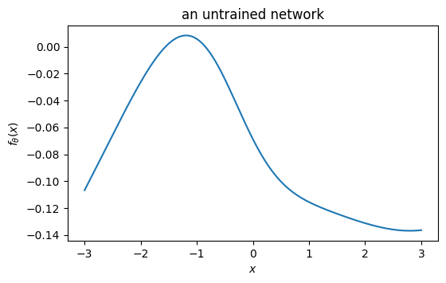
The curve is smooth, but its shape and its small values (here between about \(-0.14\) and \(0.01\)) are determined only by the random initial values of the 49 parameters; another seed gives another curve. .squeeze() turns the shapes (400, 1) into (400,) for plotting. Fitting such a network to a given function means changing its parameters until the curve follows the target: this is training.
nn.ModuleFor anything non-trivial we write a class. Two methods are required: - __init__: create the layers / parameters (always call super().__init__() first); - forward(x): describe the computation. The model is then called as model(x), not model.forward(x).
Parameters wrapped in nn.Parameter (and all parameters of sub-layers) are registered automatically. The reasons for the two rules: super().__init__() runs the __init__ of nn.Module, which creates the internal lists in which parameters and sub-layers are registered; assigning an nn.Parameter before this call fails with AttributeError: cannot assign parameters before Module.__init__() call. Calling model(x) runs forward together with additional bookkeeping of PyTorch (so-called hooks), which a direct call of forward would skip.
Below, the UAT ansatz written explicitly — exactly the formula from the lecture. In def __init__(self, N, activation=torch.tanh) the argument activation has a default value: it is used when the caller does not give this argument. A function such as torch.tanh can be passed and stored like any other object.
Initial values: W1 and b are drawn from the standard normal distribution. Neuron \(i\) switches (its \(\tanh\) changes sign) at \(x = -b_i/W^{(1)}_i\); with W1 and b of order one, most of these points (about 80 %) lie in \([-3, 3]\), the range of inputs used below, so most neurons are not saturated there. The output bias c (\(b^{(2)}\) above) only shifts \(f\) up or down; there is no reason to start with a shift, so it starts at 0.
class UATNet(nn.Module):
"""f(x) = sum_i W2_i * sigma(W1_i * x + b_i) + c (single hidden layer, N neurons)."""
def __init__(self, N, activation=torch.tanh):
super().__init__()
self.W1 = nn.Parameter(torch.randn(N)) # input weights
self.b = nn.Parameter(torch.randn(N)) # biases
self.W2 = nn.Parameter(torch.randn(N) / N**0.5) # output weights, scaled by 1/sqrt(N) (explained below)
self.c = nn.Parameter(torch.zeros(1)) # output bias
self.activation = activation
def forward(self, x): # x: shape (B,) -> output (B,)
hidden = self.activation(self.W1 * x[:, None] + self.b) # (B, N) by broadcasting
return hidden @ self.W2 + self.c
torch.manual_seed(0)
net = UATNet(N=8)
print(net) # prints only sub-modules (layers); our parameters are listed separately:
print("parameters:", [(n, tuple(p.shape)) for n, p in net.named_parameters()])
x = torch.linspace(-3, 3, 200) # shape (200,): this class takes a 1D tensor, nn.Sequential above needed shape (200, 1)
print("output shape:", net(x).shape)UATNet()
parameters: [('W1', (8,)), ('b', (8,)), ('W2', (8,)), ('c', (1,))]
output shape: torch.Size([200])Output weights divided by \(\sqrt N\). The output is a sum of \(N\) terms, \(f(x) = \sum_{i=1}^{N} W^{(2)}_i h_i(x) + c\) with \(h_i = \tanh(\dots)\in[-1,1]\). If the \(W^{(2)}_i\) are independent random numbers with mean 0 and variance \(\sigma_W^2\), the terms are uncorrelated with mean zero and their variances add: \[\mathrm{Var}\, f(x) = N\,\sigma_W^2\,\overline{h^2}, \qquad \text{standard deviation of } f \;\propto\; \sqrt{N}\,\sigma_W ,\] where \(\overline{h^2} = \frac1N\sum_i h_i(x)^2 \le 1\) is the mean squared hidden activation (the variance is taken over random \(W^{(2)}\) at fixed \(x\), with \(c = 0\)). With \(\sigma_W = 1\) an untrained network with many neurons would produce outputs that grow like \(\sqrt N\), far from the order-one values of typical targets. With \(\sigma_W = 1/\sqrt N\) the variance of the output is of order one for every \(N\). The same rule, weights scaled by \(1/\sqrt{n_{\rm in}}\) with \(n_{\rm in}\) the number of inputs of the layer, is the basis of the standard initialisations (LeCun, Xavier/Glorot), and nn.Linear uses it by default. For the first layer \(n_{\rm in} = 1\), so W1 is not scaled. The cell below measures the standard deviation of \(f\) over the inputs and 50 random initialisations, with and without the factor: the 50 outputs of shape (200,) are joined by torch.cat into one vector of \(50\times200 = 10\,000\) values, of which std() computes the sample standard deviation (normalised by the number of values minus one, which makes no difference for 10 000 values).
x_test = torch.linspace(-3, 3, 200)[:, None] # shape (200, 1)
print(" N std of f, W2 ~ N(0, 1) std of f, W2 ~ N(0, 1/N)")
for n_hidden in [1, 10, 100, 1000]:
stds = {}
for scaled in [False, True]:
outputs = []
for seed in range(50): # 50 random networks
torch.manual_seed(seed)
W1, b1 = torch.randn(n_hidden), torch.randn(n_hidden)
W2 = torch.randn(n_hidden) / (n_hidden**0.5 if scaled else 1.0)
outputs.append(torch.tanh(x_test * W1 + b1) @ W2) # (200,) for this network
stds[scaled] = torch.cat(outputs).std().item()
print(f"{n_hidden:5d} {stds[False]:20.2f} {stds[True]:22.2f}") N std of f, W2 ~ N(0, 1) std of f, W2 ~ N(0, 1/N)
1 0.67 0.67
10 2.77 0.87 100 7.52 0.75
1000 21.90 0.69Without the factor the standard deviation grows by roughly a factor of 3 for every tenfold increase of \(N\) (expected: \(\sqrt{10}\approx3.2\); with 50 random networks the estimate fluctuates); with the factor it stays of order one, independent of \(N\).
A model can be moved to the GPU withmodel.to(device), and switched to double precision with model.double().
float32; use float64 for precise physics.torch.from_numpy shares memory, torch.tensor copies; .numpy(), .item(), .cpu() to go back.reshape/view change the shape (row-by-row order), transpose/permute reorder axes (non-contiguous views), unsqueeze/squeeze add/remove axes of length 1, cat joins along an existing axis, stack along a new one; batched products with @ or einsum.device = "cuda" if available else "cpu"; everything in one operation on the same device.nn.Linear(n_in, n_out) = \(\mathbf W\mathbf z+\mathbf b\) on batches (B, n_in); nn.Sequential stacks layers; own models subclass nn.Module with __init__ and forward.with torch.no_grad(): when only evaluating.
Implement the vectorised energy of a periodic Ising chain, \(E = -\sum_{i=1}^{L} s_i s_{i+1}\) with \(s_{L+1} = s_1\), in PyTorch (torch.roll, torch.sum(..., dim=1)). Generate the random spins with torch.randint(0, 2, (M, L)) * 2 - 1. Run it on 100 000 configurations with \(L = 64\) and check the mean and standard deviation of the energy (\(\approx 0\) and \(\approx\sqrt{L}\)).
torch.manual_seed(0)
M, L, J = 100_000, 64, 1.0
# torch.randint(0, 2, ...) gives 0 or 1; *2 - 1 maps them to -1 or +1.
# .float() converts integers to floats so that sums and std() work as expected.
spins = (torch.randint(0, 2, (M, L)) * 2 - 1).float()
# np.roll -> torch.roll, axis -> dims/dim (for readers who know NumPy)
E = -J * torch.sum(spins * torch.roll(spins, shifts=-1, dims=1), dim=1)
# .item() converts a one-element tensor to a Python number for printing
print(f"mean = {E.mean().item():.3f}, std = {E.std().item():.3f}, sqrt(L) = {L**0.5:.3f}")
# Why sqrt(L): with periodic boundaries the L products s_i s_{i+1} of independent random spins are pairwise independent
# (uncorrelated) numbers +-1 with mean 0 and variance 1, so their variances add: the sum has mean 0 and variance L,
# hence standard deviation sqrt(L).mean = 0.050, std = 7.986, sqrt(L) = 8.000Build model = nn.Sequential(nn.Linear(784, 128), nn.ReLU(), nn.Linear(128, 64), nn.ReLU(), nn.Linear(64, 10)) — the classic network for MNIST (a data set of 70 000 grey-scale images of handwritten digits 0–9, each of \(28\times28\) pixels) from the next lecture. 1. Feed a random batch of 32 “images” of shape (32, 28, 28). It fails; read the error message and fix the problem with reshape. 2. Print the shape of the output. What do the 10 numbers per image represent? 3. Count the parameters (by hand from the formula \(\sum_l n_l(n_{l-1}+1)\) for layer sizes \(n_0, n_1, \dots\), and with sum(p.numel() ...)). 4. The softmax \(p_k = e^{z_k}/\sum_j e^{z_j}\) turns the 10 outputs \(z_k\) into probabilities. Apply torch.softmax(out, dim=1) and check that each row sums to 1.
model = nn.Sequential(nn.Linear(784, 128), nn.ReLU(), nn.Linear(128, 64), nn.ReLU(), nn.Linear(64, 10))
images = torch.rand(32, 28, 28) # 32 random 28x28 "images", values uniform in [0, 1) like pixel intensities
# 1) The first layer expects input of shape (batch, 784). A (32, 28, 28) tensor is interpreted as
# 32*28 = 896 rows of length 28, which does not match 784 -> error.
try:
model(images)
except RuntimeError as e:
print("Error:", e)
# Fix: flatten every image into a vector of 28*28 = 784 numbers; with -1, PyTorch computes that size.
flat = images.reshape(32, -1)
print("flattened shape:", flat.shape)
out = model(flat)
# 2) One row per image, 10 numbers per row: one score (logit) per digit class 0..9
print("output shape:", out.shape)
# 3) Parameters: layer n_in -> n_out has n_out * n_in weights and n_out biases
by_hand = 128 * (784 + 1) + 64 * (128 + 1) + 10 * (64 + 1)
print("parameters:", sum(p.numel() for p in model.parameters()), " by hand:", by_hand)
# 4) Softmax over the class dimension (dim=1) turns the scores into probabilities: p_k = exp(z_k) / sum_j exp(z_j)
# is positive and the p_k sum to 1. The unnormalised scores z_k that enter the softmax are called logits.
with torch.no_grad(): # no gradient tracking needed here (otherwise the output shows grad_fn)
probs = torch.softmax(out, dim=1)
print("row sums:", probs.sum(dim=1)[:5])Error: mat1 and mat2 shapes cannot be multiplied (896x28 and 784x128)
flattened shape: torch.Size([32, 784])
output shape: torch.Size([32, 10])
parameters: 109386 by hand: 109386
row sums: tensor([1.0000, 1.0000, 1.0000, 1.0000, 1.0000])Using nn.Sequential, build networks \(1\to W\to\cdots\to W\to 1\) with \(\tanh\) activations, width \(W=64\) and depth (number of hidden layers) \(1, 3, 10\). For each depth draw 5 random initialisations and plot \(f(x)\) on \(x\in[-5,5]\). Do this twice: (a) with PyTorch’s default initialisation, (b) with all weights redrawn from \(\mathcal N(0, (3/\sqrt{n_\text{in}})^2)\), where \(n_\text{in}\) is the number of inputs of the layer. How does the shape of a random function change with depth in the two cases? (The factor 3 is one choice among many; for \(\tanh\) networks the boundary between the two kinds of behaviour shown by (a) and (b) lies at a factor of about 1, and any factor well above 1 shows the effect of (b).) Hint: build the list of layers in a loop and pass it as nn.Sequential(*layers); torch.nn.init.normal_(layer.weight, std=...) redraws the weights of a layer.
def make_mlp(depth, width=64, activation=nn.Tanh, weight_std_factor=None):
"""1 -> width -> ... -> width -> 1 network with `depth` hidden layers.
weight_std_factor=None: PyTorch default initialisation; otherwise weights ~ N(0, (factor/sqrt(n_in))^2)."""
layers = [nn.Linear(1, width), activation()] # activation is a class (nn.Tanh); activation() creates a layer object
for _ in range(depth - 1): # remaining hidden layers
layers += [nn.Linear(width, width), activation()]
layers.append(nn.Linear(width, 1)) # linear output layer
if weight_std_factor is not None:
for layer in layers:
if isinstance(layer, nn.Linear): # True if layer is an nn.Linear object; only these have weights
n_in = layer.weight.shape[1]
# the trailing underscore of normal_ marks an in-place operation: the existing weight tensor is overwritten
nn.init.normal_(layer.weight, mean=0.0, std=weight_std_factor / n_in**0.5)
return nn.Sequential(*layers) # *layers passes the list elements as separate arguments
x = torch.linspace(-5, 5, 500)[:, None] # shape (500, 1)
fig, axes = plt.subplots(2, 3, figsize=(15, 7))
for row, (factor, row_name, plain_name) in enumerate([(None, "default init", "default init"),
(3.0, r"std $3/\sqrt{n_{in}}$", "std 3/sqrt(n_in)")]):
for ax, depth in zip(axes[row], [1, 3, 10]):
ranges = []
for seed in range(5):
torch.manual_seed(seed) # a different random network for each seed
with torch.no_grad(): # evaluation only, no gradients
y = make_mlp(depth, weight_std_factor=factor)(x).squeeze()
ax.plot(x.squeeze(), y)
ranges.append((y.max() - y.min()).item())
ax.set_title(f"{row_name}, depth = {depth}")
ax.set_xlabel("$x$"); ax.set_ylabel("$f(x)$")
print(f"{plain_name:17s} depth {depth:2d}: range of f over [-5, 5] for the 5 networks:", np.round(ranges, 4))
fig.tight_layout(); plt.show()
# (a) Default initialisation draws weights uniformly from [-1/sqrt(n_in), 1/sqrt(n_in)] (variance 1/(3 n_in)).
# Every tanh layer then shrinks the signal, and depth does NOT increase complexity: the outputs of the
# 10-layer networks vary by less than 1e-2 over the whole interval, i.e. they are almost constant.
# (b) With larger weights each layer stretches the signal and folds it through tanh; deep random networks
# then become rapidly oscillating functions; the larger the factor, the more local maxima and minima
# the deep networks have on [-5, 5].
# Depth can produce complicated functions, but only if the weights have a suitable scale; this is one
# reason why the initialisation of deep networks matters.default init depth 1: range of f over [-5, 5] for the 5 networks: [0.9912 2.7868 0.471 1.1998 0.9899]default init depth 3: range of f over [-5, 5] for the 5 networks: [0.0978 0.1152 0.2639 0.3197 0.1088]
default init depth 10: range of f over [-5, 5] for the 5 networks: [0.0015 0.0027 0.0035 0.0065 0.0054]
std 3/sqrt(n_in) depth 1: range of f over [-5, 5] for the 5 networks: [ 1.1431 1.5322 3.401 5.2946 12.0745]
std 3/sqrt(n_in) depth 3: range of f over [-5, 5] for the 5 networks: [ 4.3558 4.1454 3.6766 10.2046 6.8429]
std 3/sqrt(n_in) depth 10: range of f over [-5, 5] for the 5 networks: [11.8048 10.9719 9.7572 8.4522 10.6725]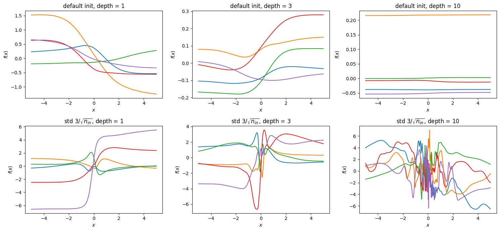
Write an nn.Module called GaussianRBF implementing \(f(x) = \sum_{i=1}^{N} a_i\, \exp\!\big(-(x-\mu_i)^2 / (2 s_i^2)\big)\) with trainable \(a_i, \mu_i, s_i\) (nn.Parameter). Initialise \(\mu_i\) on a uniform grid on \([-3,3]\), \(s_i = 0.5\), \(a_i \sim \mathcal N(0,1)\). Plot the output and the individual Gaussians for \(N=6\). (Radial-basis-function networks are also universal approximators.)
class GaussianRBF(nn.Module):
"""f(x) = sum_i a_i exp(-(x - mu_i)^2 / (2 s_i^2)) with trainable a, mu, s."""
def __init__(self, N):
super().__init__()
# nn.Parameter registers the tensor as a trainable parameter of the module
self.a = nn.Parameter(torch.randn(N)) # amplitudes
self.mu = nn.Parameter(torch.linspace(-3, 3, N)) # centres on a uniform grid
self.s = nn.Parameter(0.5 * torch.ones(N)) # widths; for N = 6 the centres are 1.2 apart, so neighbouring
# Gaussians of width 0.5 overlap and their sum is a smooth curve
def basis(self, x):
"""The N Gaussians evaluated at all points: shape (B, N)."""
return torch.exp(-(x[:, None] - self.mu)**2 / (2 * self.s**2))
def forward(self, x):
return self.basis(x) @ self.a # weighted sum -> shape (B,)
torch.manual_seed(0)
rbf = GaussianRBF(6)
print("parameters:", [(name, tuple(p.shape)) for name, p in rbf.named_parameters()])
x = torch.linspace(-4, 4, 400)
with torch.no_grad():
fig, ax = plt.subplots(figsize=(7, 4))
ax.plot(x, rbf.basis(x) * rbf.a, lw=1, alpha=0.7) # (400, 6): ax.plot draws one curve per column = one weighted Gaussian
ax.plot(x, rbf(x), "k", lw=2.5, label="sum $f(x)$")
ax.legend(); ax.set_xlabel("$x$"); ax.set_ylabel("$f(x)$ and its Gaussian terms"); plt.show()parameters: [('a', (6,)), ('mu', (6,)), ('s', (6,))]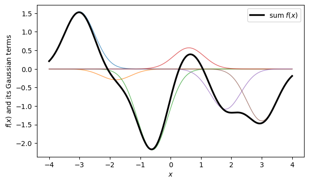
"ij,jk,kl->il" with shapes \((2,3),(3,4),(4,5)\); "bij->bj" with \((6,3,4)\); "ij,kl->ijkl" with \((2,3),(4,5)\); "bii->b" with \((6,3,3)\). Then check with code.einsum strings for: (a) \(\sum_i u_i^2\); (b) the matrix \(A^{T}A\); (c) for a batch of matrices \(A_b\) of shape \((B, n, n)\), the traces \(\mathrm{tr}\,A_b\);
einsum.quadratic_form(x, Q) that computes \(\sum_{ij} x_i Q_{ij} x_j\) for every vector along the last axis of x, whatever the number of batch axes in front (use ...). Test it with x of shapes (3,), (6, 3) and (2, 6, 3).torch.manual_seed(5)
# 1) shapes and formulas
a, b, c = torch.randn(2, 3), torch.randn(3, 4), torch.randn(4, 5)
r1 = torch.einsum("ij,jk,kl->il", a, b, c) # r_il = sum_jk a_ij b_jk c_kl = (a @ b @ c)_il, shape (2, 5)
print("ij,jk,kl->il :", tuple(r1.shape), " equals a @ b @ c:", torch.allclose(r1, a @ b @ c, atol=1e-6))
t = torch.randn(6, 3, 4)
r2 = torch.einsum("bij->bj", t) # r_bj = sum_i t_bij, shape (6, 4)
print("bij->bj :", tuple(r2.shape), " equals t.sum(dim=1):", torch.allclose(r2, t.sum(dim=1)))
r3 = torch.einsum("ij,kl->ijkl", a, c) # r_ijkl = a_ij c_kl (nothing summed), shape (2, 3, 4, 5)
print("ij,kl->ijkl :", tuple(r3.shape), " element check:", torch.allclose(r3[1, 2, 3, 4], a[1, 2] * c[3, 4]))
sq = torch.randn(6, 3, 3)
r4 = torch.einsum("bii->b", sq) # r_b = sum_i sq_bii (trace of every matrix), shape (6,)
print("bii->b :", tuple(r4.shape), " equals traces:", torch.allclose(r4, sq.diagonal(dim1=1, dim2=2).sum(dim=1)))
# 2) writing strings
u = torch.randn(5)
A43 = torch.randn(4, 3)
As = torch.randn(6, 3, 3)
xb, Q = torch.randn(6, 3), torch.randn(3, 3)
print("(a) i,i-> :", torch.allclose(torch.einsum("i,i->", u, u), (u**2).sum()))
print("(b) ki,kj->ij :", torch.allclose(torch.einsum("ki,kj->ij", A43, A43), A43.T @ A43, atol=1e-6))
print("(c) bii->b :", torch.allclose(torch.einsum("bii->b", As), torch.stack([torch.trace(m) for m in As])))
print("(d) bi,ij,bj->b :", torch.allclose(torch.einsum("bi,ij,bj->b", xb, Q, xb),
((xb @ Q) * xb).sum(dim=1), atol=1e-6))
# 3) one string for any number of batch axes: '...' stands for all axes before the last one
def quadratic_form(x, Q):
return torch.einsum("...i,ij,...j->...", x, Q, x)
for shape in [(3,), (6, 3), (2, 6, 3)]:
xs = torch.randn(shape)
reference = ((xs @ Q) * xs).sum(dim=-1)
print(f"quadratic_form for x of shape {str(shape):10s}: result shape {str(tuple(quadratic_form(xs, Q).shape)):8s}"
f" agrees: {torch.allclose(quadratic_form(xs, Q), reference, atol=1e-5)}")ij,jk,kl->il : (2, 5) equals a @ b @ c: True
bij->bj : (6, 4) equals t.sum(dim=1): True
ij,kl->ijkl : (2, 3, 4, 5) element check: True
bii->b : (6,) equals traces: True
(a) i,i-> : True
(b) ki,kj->ij : True
(c) bii->b : True
(d) bi,ij,bj->b : True
quadratic_form for x of shape (3,) : result shape () agrees: True
quadratic_form for x of shape (6, 3) : result shape (6,) agrees: True
quadratic_form for x of shape (2, 6, 3) : result shape (2, 6) agrees: TrueFor t = torch.arange(24).reshape(2, 3, 4), first predict on paper, then check with code: 1. the shapes of t.reshape(4, -1), t.transpose(0, 2), t.permute(1, 2, 0), t.flatten(1), t.unsqueeze(1), t[:, None, :, None]; 2. the value of t.permute(1, 2, 0)[2, 3, 1]; 3. which of the results in 1. are contiguous; 4. whether t.transpose(0, 2).view(-1) works.
t = torch.arange(24).reshape(2, 3, 4)
# 1) and 3): shapes and contiguity
results = {
"t.reshape(4, -1)": t.reshape(4, -1), # 24 / 4 = 6 -> (4, 6)
"t.transpose(0, 2)": t.transpose(0, 2), # axes 0 and 2 swapped -> (4, 3, 2)
"t.permute(1, 2, 0)": t.permute(1, 2, 0), # old axes (1, 2, 0) -> (3, 4, 2)
"t.flatten(1)": t.flatten(1), # axes 1 and 2 merged -> (2, 12)
"t.unsqueeze(1)": t.unsqueeze(1), # new axis at position 1 -> (2, 1, 3, 4)
"t[:, None, :, None]": t[:, None, :, None], # new axes at positions 1 and 3 -> (2, 1, 3, 1, 4)
}
for name, r in results.items():
print(f"{name:22s} shape {str(tuple(r.shape)):16s} contiguous: {r.is_contiguous()}")
# reshape, flatten and inserting axes of length 1 keep the row-by-row order of the elements (contiguous);
# transpose and permute only change the strides, so the elements are no longer stored row by row
# 2) element [2, 3, 1] of t.permute(1, 2, 0) is element [1, 2, 3] of t (old axis 0 is now last)
print("t.permute(1, 2, 0)[2, 3, 1] =", t.permute(1, 2, 0)[2, 3, 1].item(), "= t[1, 2, 3] =", t[1, 2, 3].item(),
"= 1*12 + 2*4 + 3")
# 4) view on a non-contiguous tensor
try:
t.transpose(0, 2).view(-1)
except RuntimeError as e:
print("view fails:", e)t.reshape(4, -1) shape (4, 6) contiguous: True
t.transpose(0, 2) shape (4, 3, 2) contiguous: False
t.permute(1, 2, 0) shape (3, 4, 2) contiguous: False
t.flatten(1) shape (2, 12) contiguous: True
t.unsqueeze(1) shape (2, 1, 3, 4) contiguous: True
t[:, None, :, None] shape (2, 1, 3, 1, 4) contiguous: True
t.permute(1, 2, 0)[2, 3, 1] = 23 = t[1, 2, 3] = 23 = 1*12 + 2*4 + 3
view fails: view size is not compatible with input tensor's size and stride (at least one dimension spans across two contiguous subspaces). Use .reshape(...) instead.R of shape (B, 2, 2) of rotation matrices \(\begin{pmatrix}\cos\varphi & -\sin\varphi\\ \sin\varphi & \cos\varphi\end{pmatrix}\) using torch.stack (no loop).@ and unsqueeze/squeeze, with torch.einsum, and with torch.bmm (which multiplies batches of matrices). Check that the results agree and plot the rotated vectors.n_rot = 6
phi = torch.arange(n_rot) * torch.pi / 6 # shape (n_rot,)
c, s = torch.cos(phi), torch.sin(phi)
# 1) stack the four entries: first the two rows (each of shape (B, 2)), then the rows into matrices
row1 = torch.stack([c, -s], dim=1) # (n_rot, 2)
row2 = torch.stack([s, c], dim=1) # (n_rot, 2)
R = torch.stack([row1, row2], dim=1) # (n_rot, 2, 2): R[b] = [[c, -s], [s, c]]
print("R shape:", tuple(R.shape))
# 2) rotate the unit vector e_x by every angle
e_x = torch.tensor([1.0, 0.0]).expand(n_rot, 2) # the same vector for every rotation (expand adds the batch axis)
rot1 = (R @ e_x.unsqueeze(2)).squeeze(2) # (n_rot, 2, 2) @ (n_rot, 2, 1) -> (n_rot, 2, 1) -> (n_rot, 2)
rot2 = torch.einsum("bij,bj->bi", R, e_x)
rot3 = torch.bmm(R, e_x.unsqueeze(2)).squeeze(2)
print("all three agree:", torch.allclose(rot1, rot2) and torch.allclose(rot1, rot3))
fig, ax = plt.subplots(figsize=(4, 4))
angle_labels = ["$0$", r"$\pi/6$", r"$2\pi/6$", r"$3\pi/6$", r"$4\pi/6$", r"$5\pi/6$"]
for b in range(n_rot):
ax.arrow(0, 0, rot1[b, 0].item(), rot1[b, 1].item(), head_width=0.04, length_includes_head=True, color=f"C{b}")
ax.text(1.12 * rot1[b, 0].item(), 1.12 * rot1[b, 1].item(), angle_labels[b], ha="center", fontsize=9)
ax.set_xlim(-1.3, 1.3); ax.set_ylim(-0.3, 1.3); ax.set_aspect("equal"); ax.set_xlabel("$x$"); ax.set_ylabel("$y$")
plt.show()
# 3) R^T R for all rotations at once: transpose the last two axes
RtR = R.transpose(1, 2) @ R # (n_rot, 2, 2)
print("max |R^T R - 1|:", (RtR - torch.eye(2)).abs().max().item())R shape: (6, 2, 2)
all three agree: True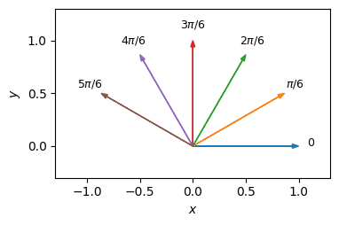
max |R^T R - 1|: 0.0A batch of \(B = 8\) time series, each with \(T = 50\) time steps and \(F = 3\) measured quantities per step, is stored as a tensor of shape (B, T, F). 1. Apply nn.Linear(3, 5) to every time step by reshaping to (B*T, F), applying the layer, and reshaping back to (B, T, 5). 2. Apply the layer directly to the (B, T, F) tensor and compare: nn.Linear acts on the last axis and treats all other axes as batch axes. 3. What goes wrong if the tensor is stored as (B, F, T) instead? Fix it with transpose.
n_series, T, F = 8, 50, 3
torch.manual_seed(0)
series = torch.randn(n_series, T, F)
lin = nn.Linear(F, 5)
# 1) merge batch and time axes, apply the layer, split them again
out1 = lin(series.reshape(n_series * T, F)).reshape(n_series, T, 5)
# 2) directly: Linear acts on the last axis
out2 = lin(series)
print("shapes:", tuple(out1.shape), tuple(out2.shape), " agree:", torch.allclose(out1, out2))
# 3) features before time: the last axis has length T = 50, not F = 3
series_ft = series.transpose(1, 2) # (B, F, T)
try:
lin(series_ft)
except RuntimeError as e:
print("RuntimeError:", e)
# Linear merges all leading axes into one batch axis, (8 * 3) x 50 = 24 x 50, and multiplies it with W^T, which is 3 x 5
# (the stored weight has shape (5, 3)): the inner dimensions 50 and 3 do not match
out3 = lin(series_ft.transpose(1, 2)) # back to (B, T, F) before the layer
print("after transposing back:", tuple(out3.shape), " agrees:", torch.allclose(out3, out1))shapes: (8, 50, 5) (8, 50, 5) agree: True
RuntimeError: mat1 and mat2 shapes cannot be multiplied (24x50 and 3x5)
after transposing back: (8, 50, 5) agrees: True